跟练教程 · 真实案例：找到狡猾的猪腰
从 0 到 1 用 AI 做出
你的微信小程序
手把手教你把一个小程序从 0 做到上线，全程使用 AI 编程工具（Cursor），不需要你会编程。每一步都对应真实项目里真实踩过的坑和真实解法，以本网站的产品「找到狡猾的猪腰」为教材。
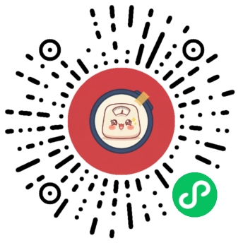
成品在这 · 先扫一眼
长按识别 · 直达小程序
开始之前
搞清楚这门课要带你做出什么东西、大概花多少钱、你需要准备什么，然后决定要不要跟着走下去。
0.0 先聊两句
欢迎你打开这份跟练教程。
在开始之前，我想先让你做一件小事：低头看看自己的手机，想想你最近一次因为别人分享的链接，扫码打开了一个小程序。是测性格的？测运势的？还是看照片怀旧的？
你可能会想：这种东西是谁做的？应该很厉害吧？
答案可能让你意外。做一个小程序，没有你想象的那么难。尤其是现在，有了 AI 编程工具的帮助，一个完全不懂编程的人，也能在几周内做出一个「能上线、能分享、能被人扫进微信」的小程序。
这门课，就是带你走一遍这条路。我们不空谈理论，我们用一套真实做出来的产品当教材，一步一步跟着做。你做的每一步，都对应 FatTI 真实踩过的坑和真实解法。
这套产品，就是本教程的案例：FatTI「找到狡猾的猪腰」，一个减脂人格测试加 AI 控卡单的微信小程序。它是我们团队从零开始，用了大约三周时间（2026 年 7 月 20 日起步，8 月 12 日发布正式版）做出来的。
0.1 你能做出什么
跟完这门课，你会得到一个属于你自己的小程序。它可以像 FatTI 一样：
- 用户点开你的小程序，做一套有趣的小测试（比如测测你是哪种人格）
- 答题结束，生成一张专属的结果页，还配好看的插画
- 用户可以把结果保存成海报，分享到朋友圈、发给朋友
- 朋友扫码进来，又完成一轮新的传播
一个能被分享、能上线、能被人扫进微信的小程序，这就是我们的目标产品。
我们不追求做得多复杂。我们的目标是：先把它跑起来，再让它变好看，最后让它被更多人看到。
0.2 你需要准备的三样东西
开始之前，请确认你有下面三样东西。不需要会编程，这是硬性承诺。
第一样：一台电脑。 Windows 或 macOS 都可以。因为我们要安装开发工具、写代码，后面还要用电脑把小程序上传到微信。这一整门课都在电脑上操作。
第二样：一个手机。 用来扫码登录各种平台，也用来在手机微信里打开你做好的小程序，亲眼看效果。
第三样：一个能上微信的脑子。 愿意跟着步骤一步一步点，遇到看不懂的先照着做，做完了再回头理解。这是唯一真正需要的「能力」。
还有一个加分项，但不是必需的：一个可以接收短信验证码的国内手机号。注册微信小程序账号和部分平台账号时会用到。
0.3 真实案例先导：找到狡猾的猪腰
在开始动手之前，我们先花一分钟认识一下我们的案例产品。这样后面每一章，你都知道我们「正在做的东西」长什么样。
FatTI 的完整名字叫「找到狡猾的猪腰」。它是一个减脂人格测试小程序：用户做一套测试，系统会把他归类为 16 种「脂妖人格」之一，比如「走火入魔」（真练真饿，信条全来自博主）、「明天开练」（算得很清，练得很勤，就是明天才开练）、「猎卡妖犬」（信热量不信玄学）。
测试做完，系统根据你的回答生成人格结果页，配一张专属插画，你可以保存成海报分享出去。
进阶功能是 AI 控卡单：填 5 步档案（身体数据、目标设定、作息节奏、常去的店与忌口、厨房工具），AI 帮你算出今天的四餐控卡单，每餐吃什么、多少热量，明明白白。
这套产品对应我们的技术选型：
- 前端（用户看到的部分）：Taro + React + TypeScript + Sass，编译成微信小程序
- 后端（进阶章节）：FastAPI（Python）+ PostgreSQL 数据库
- 部署：Nginx + Cloudflare + 腾讯云轻量服务器
- AI 工具：Cursor（AI 编程 IDE）
- 大模型接口：DeepSeek 等 OpenAI 兼容的 LLM API
现在你不用懂这些名词。第 1 章我们会用最通俗的方式，把它们全部讲明白。你只需要记住一件事：这些东西，是一个普通个人开发者（个人主体账号）真的用得起的组合。
0.4 预算表：首年千元内把小程序跑起来
很多小白一听到「做小程序」，第一反应是：是不是要花很多钱？
我们直接给你看账本。这套东西的公开价格大致如下（价格区间随市场波动，以你购买时的实际价格为准）：
| 项目 | 说明 | 价格区间 | 备注 |
|---|---|---|---|
| Cursor | AI 编程工具 | 免费版 0 元；Pro 约 20 美元/月 | 教程用免费版即可起步 |
| LLM API | DeepSeek 等（OpenAI 兼容） | 轻度使用几元到几十元/月 | 可选，第 2 章和第 10 章用到 |
| 微信小程序 | 个人主体注册 | 注册免费（个人认证约 30 元/年，可选） | 注册免费 |
| 域名 | .com/.top/.xyz 等 | 约 20 到 100 元/年 | 海外注册商购买，免国内备案/实名 |
| 云服务器 | 轻量 2C2G 起步 | 约 50 到 150 元/月（新用户有优惠） | 第 3 章和第 10 章用到 |
| Cloudflare | DNS + CDN | 免费 | 免费 |
| GitHub | 代码托管 | 免费 | 免费 |
| 首年合计 | 最省方案 | 约 500 到 1000 元 | 含服务器月付 + 域名 |
看懂这张表了吗？关键信息有两个。
第一，注册小程序本身是免费的。你只需要花几十块钱买一个域名，再花每个月几十块钱租一台最便宜的云服务器，就够跑起来了。首年加起来，五百到一千元，这是「最省方案」的全套价格。
第二，更重要的：前五到九章，你可以一分钱不花。 我们先把小程序做成「纯前端」的，也就是所有功能都跑在用户手机里，不需要服务器，不需要域名。等第 10 章进阶到 AI 后端，才需要服务器和域名。
所以这门课的教学顺序是：先零成本跑通，再花钱进阶。 你甚至可以做完前九章，就把一个小程序免费上线（上线本身也免费）。
0.5 这门课怎么跟
每章的格式是固定的，方便你按节奏推进：
- 本章目标：开头一句话告诉你这一章做完能得到什么
- 概念讲解：先用生活化类比讲清楚名词，再给专业名字
- 实操步骤：一步一步照着点，每一步都写清楚
- 截图占位：正文里你会看到
这样的占位符，表示「这里放一张截图」。格式是S01这样的编号加一句话描述。截图编号与大纲的截图清单一一对应（S01 到 S43），等你做完每一步，按编号把截图替换进去即可 - 自查清单：每章结尾用打勾列表检查自己有没有漏掉步骤
- 本章小结：3 到 5 条要点，收束本章
另外有三个约定，跟完一整本你会发现它们有多重要：
- 先照着做，再理解。 小白最容易卡住的点是想把每一步都搞懂再动手。我们的建议正好相反：先动手，看到结果，再回头想「刚才发生了什么」。第 1 章就是专门给你「混脸熟」用的。
- 复制命令时小心。 正文里的代码块、命令，都是可以直接复制粘贴的。但如果命令里出现
<你的AppID>、<你的域名>这种尖括号包着的词，意思是「这里要换成你自己的值」，别原样粘贴。 - 隐私红线。 教程里所有涉及账号、密钥、IP、域名的地方，都会用占位符替代。你自己的真实 AppID、密钥、服务器 IP、域名，请务必保管好，不要截图发到公开渠道。
自查清单
- 我有一台可以装软件的电脑（Windows 或 macOS 都可以）
- 我有一个手机，可以扫码和打开微信
- 我读了 0.4 的预算表，知道最省方案大约 500 到 1000 元/年
- 我知道前五到九章可以一分钱不花，纯前端跑通
- 我理解了每章的固定格式（目标、概念、实操、自查、小结）
本章小结
- 这门课带你把一个小程序从零做到上线，全程用 AI 编程工具，不需要会编程
- 案例产品是 FatTI「找到狡猾的猪腰」，一个真实做出来、已上线的减脂人格测试小程序
- 三样准备：一台电脑、一个手机、一个能上微信的脑子
- 最省方案首年约 500 到 1000 元，而且前五到九章可以零成本跑通
- 跟课节奏：先照着做，再理解；遇到占位符就换成自己的值；保管好隐私信息
准备好了吗？第 1 章，我们先花一点时间，把这些吓人的名词全部「混个脸熟」。
扫盲：先把这些名词混个脸熟
不要求你看懂，只要求「见过」。读完这一章，后面所有章节里出现的名词，你都不再是完全陌生的外星语。
1.0 先聊两句
写代码这件事，最大的门槛往往不是代码本身，而是「术语」。后端、数据库、API、Token、DNS…… 每一个词都像是从另一门语言里直接搬过来的。
好消息是：这些词背后的道理，你用生活经验早就懂了。比如「餐厅」，你肯定懂。我们这章就把做小程序这件事，翻译成你懂的事情。
这一章全程零操作，一个命令都不用敲。你只需要放松，跟着读一遍，混个脸熟。真的只是脸熟，不要求记住。后面每一章用到哪个名词，我们都会再解释一遍。
1.1 小程序 vs App vs 网页：为什么选小程序
先认识三个东西：小程序、App、网页。它们都是「用户在手机屏幕上看到的东西」，但长得不一样、用起来也不一样。
App 就是那种需要去应用商店下载、装到手机里的软件。比如微信、抖音、支付宝。它的优点是功能强大、体验顺滑；缺点是用户要主动下载，还要占手机内存。对新手开发者来说，上架 App 还要交平台审核费、给应用商店分成，门槛高。
网页 就是你在浏览器里打开的网站。手机上打开网页，不用下载，点开就用。缺点是体验一般，而且「手机网页」和「微信里的网页」关系微妙，微信对网页分享有很多限制。
小程序 是微信里的一种「轻应用」。它的位置在微信的「发现」里，或者朋友分享的卡片里，点开就运行，用完关掉，不用下载、不用安装。用户把结果海报分享到朋友圈，朋友点开就直接是这个小程序。这对「病毒式传播」来说，是天然的利器。
我们为什么选小程序？三个理由：
- 免下载：用户零门槛，点开即用，分享链路极短
- 微信生态：分享到朋友圈、转发给朋友、扫码进入，都是微信原生支持的
- 个人可做：微信允许个人主体注册小程序（付费类功能受限，但测试、分享、内容展示完全够用）
打个比方：App 像一家需要你专程坐车去的大型商场；网页像路边一张传单，看两眼就丢；小程序像开在微信里的一个小档口，路过就能进来逛逛，觉得好还能直接把店铺分享给朋友。
1.2 前端、后端、服务器、数据库：一家餐厅
做一个小程序，绕不开这四个词：前端、后端、服务器、数据库。我们用一家餐厅来打比方。
前端是餐厅的「大堂」：桌子、菜单、点菜流程。用户看到的一切、点击的一切，都叫前端。你做的小程序里，页面长什么样、按钮在哪、点击后页面怎么跳转，这些全是前端。用户只跟前端打交道。
后端是餐厅的「后厨」：你看不到，但它负责真正干活。你点的菜，菜单上可没有做法，是后厨做的。小程序里那些「需要计算、需要查资料、需要保存」的逻辑，放在后厨。比如 FatTI 里「根据你的答案算出你是什么人格」的计分逻辑，放在后端做更合适（也可以放在前端，我们第 7 章会讲纯前端怎么算）。
数据库是餐厅的「仓库」：存放食材和账本的地方。用户数据、内容数据、记录数据，都存在数据库里。用户上次测的结果、你的题库，都可以存进数据库。
服务器是「餐厅的楼房」：前厅后厨仓库，都装在这栋楼里。服务器是一台 24 小时开机的电脑，专门跑你的后端程序。它放在云上，也就是「云服务器」，你可以按需租用，就像租店铺一样。
一句话串起来：前端在用户手机里跑，后端在云服务器里跑，数据库在服务器里存数据。 但请注意，这一章的理解在后期会有一个重要的放松：我们的小程序（第 5 到 9 章）可以把后端和数据库全部省略，让前端自己把活全干完。这叫「纯前端」，后面你会体会到它有多香。
1.3 域名、DNS、HTTPS：门牌号、查号台、带锁的信封
互联网上，每一台服务器都有一个地址，叫 IP 地址，比如 1.2.3.4。但让用户记住一串数字去访问你的服务器，不现实。于是有了这三个东西。
域名是服务器的「门牌号」：一个人类能记住的名字，比如 example.com。用户访问你的网站，本质上就是通过这个名字找到对应的服务器。
DNS 是「查号台」：你记住的是名字，但计算机只认数字。DNS 的作用，就是把 example.com 这样的名字，翻译成服务器真正的 IP 地址。你在浏览器输入域名，DNS 帮你查到 IP，然后你的请求就发到了那台服务器。
HTTPS 是「带锁的信封」：浏览器和服务器之间传递信息时，内容被加密了。即使有人在路上偷看，也看不懂内容。所有正规网站和微信要求的小程序接口，都必须是 HTTPS。可以看到，HTTPS 的 S 就是 Security（安全）的意思。
小程序的「request 合法域名」要求，本质上是：你小程序要访问的服务器，必须有一个自己的域名，而且这个域名必须开启了 HTTPS。 微信为了安全，不允许小程序随便访问裸 IP 地址或没加密的地址。
1.4 AI 编程是什么：一个坐在你旁边、会写代码的同事
传统写代码，是你自己动手敲每一行。AI 编程，是你用自然语言（比如中文）说出你想要什么，AI 工具帮你写出代码。
你可以把 Cursor 想象成一位「坐在你旁边的程序员同事」：你告诉它需求，它噼里啪啦写出一段代码给你看；你觉得哪里不对，直接告诉它「改成 XX」，它立刻改。你还能在它写完以后，自己打开代码检查、修改，主动权完全在你。
关键要理解 AI 编程能做什么、不能做什么：
能做的：
- 从零生成代码：你说「帮我写一个倒计时页面」，它给你写出来
- 改代码：你说「把这个按钮颜色改成红色」，它帮你改
- 解释代码：你说「这行代码是什么意思」，它讲给你听
- 找问题：你的程序报错了，把报错信息贴给它，它帮你分析
不能做的：
- 替你决定产品方向：你要做什么、给谁用、叫什么名字，这是你的事
- 替你理解业务需求：需求讲得不清楚，它写出来的东西自然不对
- 替你做验证：它写完的代码到底能不能跑，必须你亲自运行看结果（我们会教你一套验证方法）
所以正确的姿势是：AI 负责「快速产出」，你负责「提出需求 + 验证结果」。 一个完全不懂编程的人，配合 AI，也能写出能上线的小程序。前提是：你愿意一步一步验证，不偷懒。
1.5 Token 是什么：LLM 的「计费字」
你在 AI 编程的圈子里会经常听到一个词：Token（令牌）。我们在这里只需要把它理解成「计费字」。
用 AI 的时候，你输入的文字会被切成小块，每块算一个 Token。AI 输出的内容也是按 Token 计费。比如一句话「我想做个减肥小程序」，可能就被切成了十几个 Token。Tokenizer（分词器）的规则因模型而异，英文一个单词往往一个 Token，中文一个字可能是一到两个 Token。
为什么小白需要知道这个？因为它是 AI 服务按量计费的最小单位，而且便宜到可以忽略。以 DeepSeek 这类模型为例，日常轻度使用（每天跟 AI 聊聊天、写写代码），一个月可能就是几元到几十元。Cursor 的免费版甚至会赠送一定额度的额度，够新手练手用很久。
所以你不用焦虑 Token 会花光你的钱。只要记住：轻度使用，AI 成本几乎可以忽略；真正花钱的地方是云服务器和域名。
1.6 本教程技术栈地图：先混个脸熟
最后，我们把这本书会反复出现的名词一次性列出来。现在不用理解，混个脸熟，后面用到哪章会再展开。
| 名词 | 一句话解释 | 在哪一章深入 |
|---|---|---|
| 微信小程序 | 微信里的轻应用，免下载即点即用 | 第 5 章 |
| Taro | 一套框架，用一套代码可以编译成多个小程序平台 | 第 5 章 |
| React | 一个写界面的 JavaScript 库，Taro 用它写页面 | 第 5 章 |
| TypeScript | 带类型检查的 JavaScript 增强版 | 第 5 章 |
| Sass | 更好写的 CSS，用来给页面化妆 | 第 8 章 |
| 前端 | 用户看到的界面和交互 | 第 5 到 9 章 |
| 后端 | 跑在服务器上的逻辑，处理数据和计算 | 第 10 章 |
| FastAPI | 一个用 Python 写后端接口的框架 | 第 10 章 |
| PostgreSQL | 一个数据库软件，存用户数据 | 第 10 章 |
| Nginx | 服务器上的「门卫」，转发网络请求 | 第 10 章 |
| Cloudflare | 免费的域名解析 + CDN 加速服务 | 第 3 章 |
| 云服务器 | 租一台 24 小时开机的电脑 | 第 3 章 |
| Cursor | 本书的主角：AI 编程 IDE | 第 2 章 |
| DeepSeek | 便宜好用的国产大模型，支持 OpenAI 兼容接口 | 第 10 章 |
| LLM API | 大模型提供的编程接口，程序可以调用它 | 第 10 章 |
| Token | AI 的计费单位 | 本章 1.5 |
在官网的配套页面里，会有一张「技术栈关系图」的静态图，把这些名词的关系画出来：前端、后端、服务器、数据库各就各位，AI 工具在旁边帮你写代码。你可以对照着看，比纯文字好记。
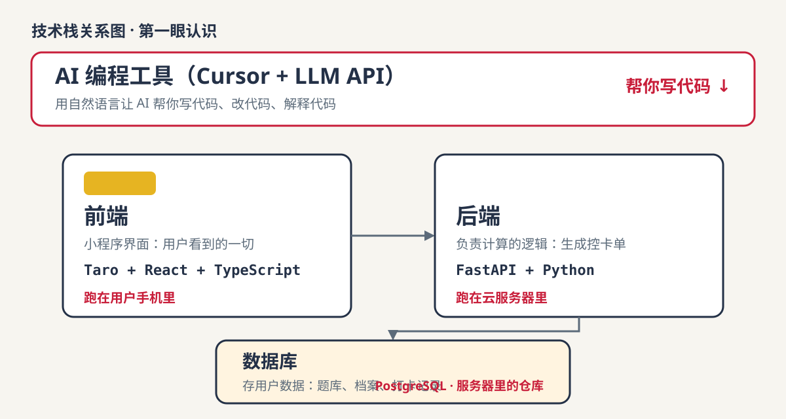
这一章到这里，任务就完成了。记住，你的任务不是背下来，而是「脸熟」。现在你至少知道了：小程序是什么、前后端大概的分工、域名 DNS HTTPS 是什么、AI 编程能干什么、Token 便宜得很。这些认识，已经足够支撑你进入第 2 章动手装了。
自查清单
- 我能用一句话说清小程序、App、网页的区别
- 我知道前端是用户看到的、后端是用户看不到的逻辑
- 我知道数据库存数据、服务器是 24 小时开机的电脑
- 我知道域名是门牌号、DNS 是查号台、HTTPS 是带锁的信封
- 我知道 AI 编程能做的是「快速产出」，必须我自己验证结果
- 我知道 Token 是计费字，而且轻度使用很便宜
- 我把 1.6 的技术栈名词都扫了一遍，至少见过
本章小结
- 小程序免下载、在微信里即点即用，是最适合病毒式传播的载体
- 前端在用户手机里跑，后端在服务器里跑，数据库存数据；纯前端可以不要后端
- 域名是门牌号，DNS 是查号台，HTTPS 是带锁的信封，微信要求接口必须 HTTPS
- AI 编程帮你快速产出代码，但需求由你把关、结果由你验证
- Token 是 AI 的计费单位，轻度使用成本可忽略
现在，我们进入第一次实操：装工具。
装好你的开发工具
把接下来几周要用的所有本地工具装好，并且验证每一样都能跑。这是第一次实操，装完你会对自己的电脑有一种「哦，它真的能干这行」的感觉。
2.0 先聊两句
第 1 章我们混了个脸熟，现在开始动真格。这一章的任务很单纯：装四样东西。
- Cursor：AI 编程 IDE，你以后写代码的主战场
- Node.js：运行 JavaScript 代码的环境，Taro 离不开它
- Git：代码版本管理工具，也是以后和 GitHub 打交道用的
- 微信开发者工具：微信官方的小程序 IDE，自带模拟器，你以后天天打开它
每装一样，我们都会验证「装好了没」。验证的方法是打开一个叫「终端」（也叫「命令行」）的东西，输入命令看返回。第一次用终端会有点陌生，别怕，跟着敲就行。
2.1 安装 Cursor
Cursor 是一个「AI 编程 IDE」。IDE 的意思是一款专门用来写代码的软件，像一个功能齐全的「文本编辑器加执行器」。Cursor 的特殊之处是：它把 AI 直接嵌进了这个编辑器里，你可以在写代码的同时和 AI 对话，让 AI 帮你写、帮你改。
第一步，打开 Cursor 的官网下载页。打开网站后，你会看到「Download」（下载）按钮，还有 macOS 和 Windows 的系统选择。请根据自己的电脑系统选择对应的安装包下载。下图就是官网下载页的样子。
打开 Cursor 官网，你会看到这样的下载页：
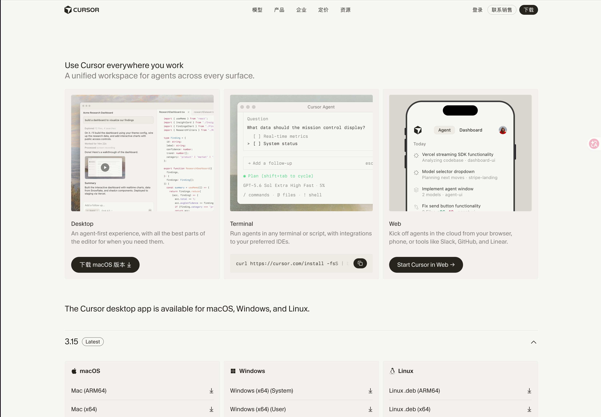
下载完成后，双击安装包，跟着安装向导一路「继续」就行，安装过程不需要你做任何特殊选择。装完以后，在「应用程序」（macOS）或「开始菜单」（Windows）里找到 Cursor，打开它。
2.2 首次启动 Cursor：界面三件套
第一次打开 Cursor，会有一个欢迎页，通常需要你登录账号（可以用邮箱注册，也可以用 GitHub 账号登录，GitHub 我们第 3 章会注册，先用邮箱登录即可）。登录之后，你会进入主界面。
首次启动，你会看到欢迎页和登录界面：
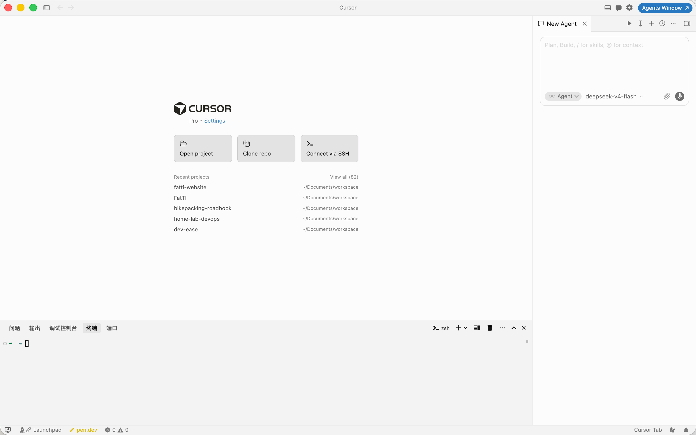
进入主界面后，我们只认识三个区域，记住它们是「界面三件套」：
编辑器区：屏幕中央最大的区域，代码在这里显示和编辑。现在它是空白的，正常。
对话区（AI 对话面板）：通常是右侧或可打开的侧边栏，你在这里和 AI 说话。你可以用中文直接提问：「帮我把这段代码解释一下」「帮我写一个按钮」。
终端区（Terminal）：通常在屏幕下方，可以打开和关闭。这里就是第 2 章要用的「终端」。在 Cursor 里按快捷键 Ctrl + \（Windows）或 Cmd + \（macOS）可以快速打开或收起终端。
现在你只需要认识这三个区域。更深的功能，我们在第 4、5 章使用 skills 和初始化项目时，会一边用一边教。
2.3 LLM Token 计划怎么选：免费版、Pro、自购 API
Cursor 本身是免费的 IDE，但它内置的 AI 能力需要「模型额度」。你打开 Cursor 的设置，找到订阅计划（Subscription/Plan），会看到几个档位：
在 Cursor 设置里，你可以看到订阅计划与模型选择：
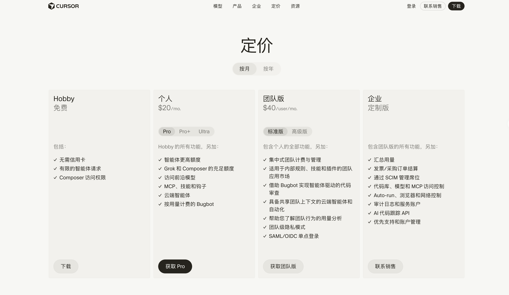
这里我们要把三种方案讲清楚，因为你以后会听到很多。
方案一：免费版。 0 美元。每天有一定额度的 AI 对话次数和高速请求次数。对于新手跟这本教程来说，够用。我们的建议是：一开始就用免费版，不要花钱。
方案二：Pro 订阅。 大约 20 美元/月。不限次数的对话，优先使用先进模型。适合每天大量使用 AI 的重度用户。
方案三：自购 LLM API。 不用 Cursor 自带的模型，而是自己去 DeepSeek 等平台开通 API 接口（OpenAI 兼容），把 Key（密钥）填进 Cursor 的模型设置里，按使用量付费。这种方案的好处是便宜、灵活；坏处是要自己管理 Key，而且轻度使用可能用不完免费版，没必要折腾。
FatTI 项目的实际用法是：主要使用 Cursor 的订阅额度，同时配合 DeepSeek 的 API 做后端的大模型调用（第 10 章）。作为新手，你现阶段只需要记住：先用免费版，等真的不够用了再考虑付费。 不要为了「安全感」提前花钱。
2.4 安装 Node.js
Node.js 是一个「JavaScript 运行时」。JavaScript 本来是浏览器里跑的语言，Node.js 让它可以在电脑上独立运行。我们的小程序框架 Taro 就是用 JavaScript/TypeScript 写的，编译小程序的工具也依赖 Node.js。
安装步骤：
- 打开 Node.js 官网，下载 LTS（Long Term Support，长期支持版）版本。LTS 意味着这个版本会长期维护，最稳定。下载哪个具体版本号不重要，以官网标注 LTS 的为准即可
- 双击安装包，一路「下一步」。Windows 安装时注意勾选自动加入 PATH（通常默认勾选，别取消）
- 安装完成后，验证是否成功
验证方法是打开终端（Cursor 里按 Ctrl + \ 或 Cmd + \，或者直接用系统自带的终端软件），输入下面这个命令然后回车：
node -v如果一切正常，终端会显示一串版本号，比如 v20.x.x（具体版本号以你安装的版本为准）。看到版本号，就说明 Node.js 装好了。
在终端执行 node -v，你会看到类似这样的版本号：
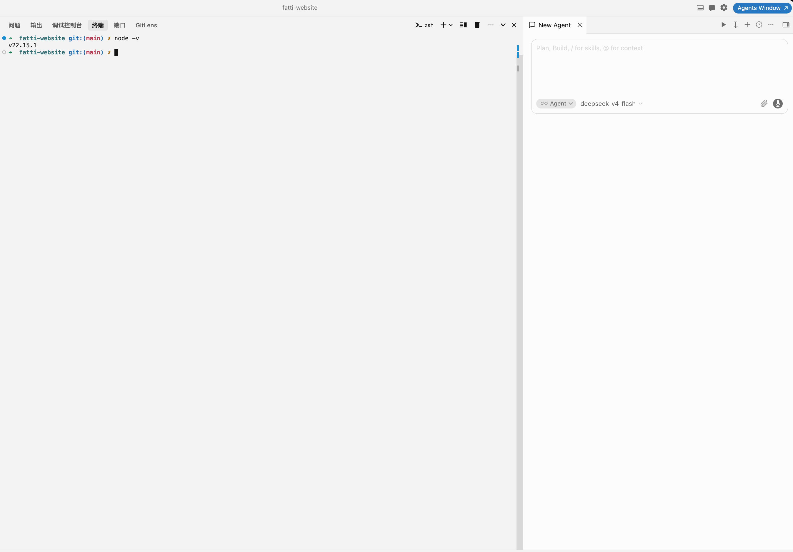
顺带一提，Node.js 装好后，会自带一个叫 npm 的包管理工具（后面我们还会用到 pnpm，它需要单独装，第 5 章会教你）。npm 的作用是帮你下载别人写好的代码库，就像手机应用商店帮你安装 App。
2.5 安装 Git 并配置
Git 是一个「代码版本管理工具」。它最大的作用是记录你的代码每一次修改，像游戏存档一样，改坏了可以回退到任意一个存档点。它也是第 3 章连上 GitHub 的前提（GitHub 是放代码的网站，Git 是把代码送到网站的通道）。
安装步骤：
- 打开 Git 官网，下载你系统对应的安装包
- macOS 用户如果装了 Homebrew（一款包管理器），也可以用命令
brew install git安装；嫌麻烦就直接下安装包 - 双击安装包，一路「下一步」（Windows 用户到「Adjusting your PATH」那一步，保持默认的「Git from the command line」即可）
- 验证是否成功
打开终端，输入：
git --version看到类似 git version 2.x.x 的输出（以你安装的版本为准），就说明 Git 装好了。
装好后，我们要做一次「自我介绍」，告诉 Git 你是谁。因为以后每次提交代码，Git 都要记录「这是谁提交的」。在终端里输入下面两条命令，把名字和邮箱换成你自己的（邮箱建议用你后面注册 GitHub 时用的同一个）：
git config --global user.name "你的名字"
git config --global user.email "你的邮箱@example.com"这两条命令不会输出任何内容，直接结束就是成功。以后每本书教你在项目里敲 git commit 提交代码时，Git 就会自动用这两个信息署名。
2.6 安装微信开发者工具
微信开发者工具是微信官方的小程序 IDE。它最重要的组件叫「模拟器」，可以在你电脑上直接模拟手机微信环境，运行你的小程序，不用真机也能看效果。
安装步骤：
- 打开微信开发者工具的官方下载页（微信公众平台网站里有「开发工具」入口）
- 选择「稳定版」下载。稳定版就是最稳妥的版本，适合普通开发
在微信开发者工具下载页，找到稳定版的下载入口：
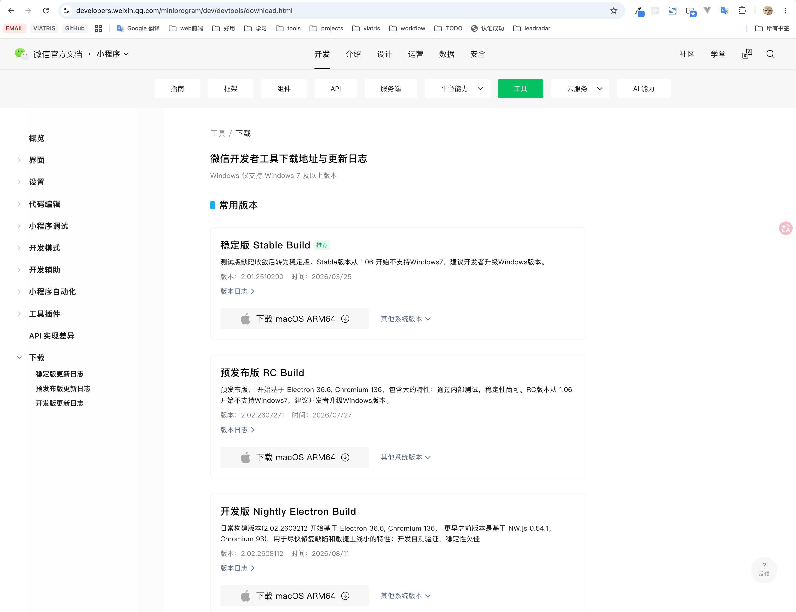
- 双击安装包，一路「下一步」
- 安装完成后，打开它，会要求你用微信扫码登录。用手机微信扫码，在手机上确认，就登录成功了
微信开发者工具首次启动，会要求你用微信扫码登录：
登录进去以后你会看到类似「选择项目/新建项目」的界面。现在不用管，第 5 章搭好骨架以后，我们会把项目导入到这里。
到这里，四样工具全部装完了。这一章我们不写代码，但你现在已经拥有了一个完整的「开发环境」。用一句话总结你现在的状态：你的电脑已经从「普通电脑」变成了「能开发微信小程序的电脑」。
自查清单
- Cursor 已安装，能打开主界面，认识编辑器、对话区、终端三件套
- 我决定了 AI 方案的起点：先免费版，不够再加
- 终端执行
node -v显示了版本号 - 终端执行
git --version显示了版本号 - 我执行了
git config --global user.name和user.email，完成了 Git 自我介绍 - 微信开发者工具已安装，并且扫码登录成功
- 我知道用 Ctrl + \ 或 Cmd + \ 打开终端
本章小结
- Cursor 是 AI 编程 IDE，界面三件套是编辑器、对话区、终端
- AI 方案分三档：免费版、Pro 订阅、自购 API，新手先免费版
- Node.js 是 JavaScript 的运行环境，
node -v验证安装 - Git 是版本管理工具，
git --version验证，装完要做「自我介绍」 - 微信开发者工具带模拟器，扫码登录即可
现在万事俱备，还差「入场券」。第 3 章，我们开始注册五个账号。
注册你的五个账号
把「入场券」全部办齐。这一章办完，你就拥有了完整的小程序发布链路：代码有地方放、小程序有身份、服务器有家、域名有名字、通信有通道。
3.0 先聊两句
做小程序像开一家店：光有手艺（第 2 章的工具）还不够，还得有营业执照、店面、招牌、门牌号。这一章我们办五张证：
- GitHub 账号：代码的「家」，存放和管理你的代码
- 微信小程序账号：你的小程序在微信里的「身份」，最终发布必须靠它
- 云服务器：你的「店面」，跑后端程序用的（第 10 章才真正用到，但建议提前买）
- 域名：你的「招牌」，用户访问你的服务器要用的名字
- DNS 与 request 合法域名配置：把招牌指向店面，并让微信承认这个通道
好消息是：GitHub、微信小程序、Cloudflare、DNS 配置全部免费。这一章真正要花钱的只有两样：域名（海外注册商一年几十元）和服务器（每月几十元）。而即使是这两样，如果你打算先做纯前端（第 5 到 9 章），也完全可以等一等再买。
请记住本章的隐私纪律：所有账号信息、密钥、IP、域名，都要用占位符代替。你注册时填写的真实信息，自己收好，不要出现在任何截图和分享里。
3.1 GitHub：代码的家
GitHub 是全球最大的代码托管网站。你的代码存在 GitHub 上，有两个好处：一是备份，电脑坏了代码不丢；二是配合 Git（第 2 章装的），随时能回到任何一个历史版本。
注册步骤：
- 打开 GitHub 官网，点右上角「Sign up」
- 填写用户名（用户名以后会出现在你的仓库地址里，建议用拼音或英文，别用中文）、邮箱、密码
- 可能会有人机验证（拼图之类），按提示完成
- 去邮箱里点确认链接，账号就激活了
GitHub 注册页长这样，填写用户名、邮箱和密码：
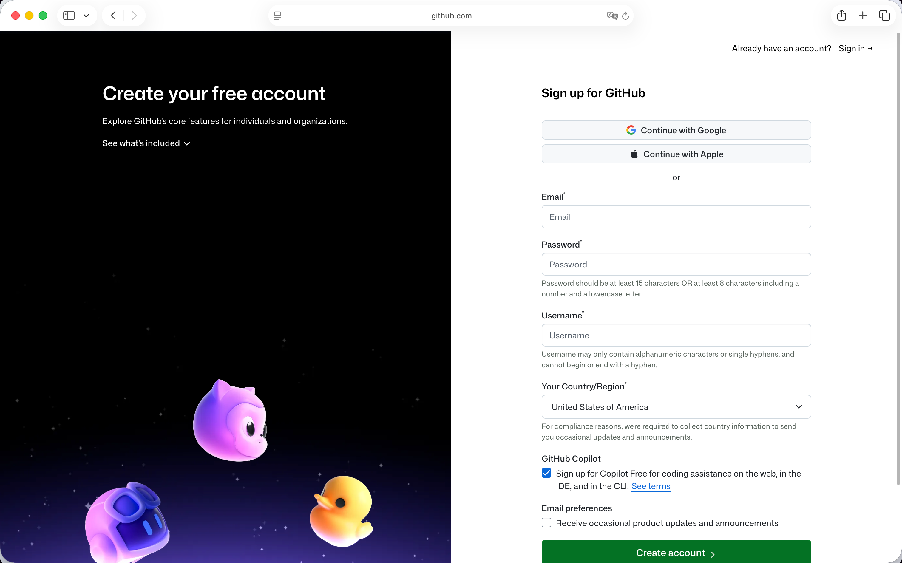
注册好以后，我们创建第一个仓库（Repository，仓库就是存放一个项目所有代码的文件夹）。点右上角的「+」号，选择「New repository」，进入新建页面：
- 填一个仓库名，比如
my-miniapp - 选择公开（Public）还是私有（Private）。公开的代码别人能看到，私有只有你（和受邀请的人）能看到。对新手，建议选私有，避免误传密钥等敏感信息。注意，以后如果你要把小程序托管到 GitHub Pages 做官网（第 12 章），那时再改成公开
- 勾选初始化选项：建议勾上 README 文件（项目的说明文件），这样仓库一创建就有内容
- 点「Create repository」创建
新建仓库的页面，填仓库名、可见性，勾选 README 初始化：
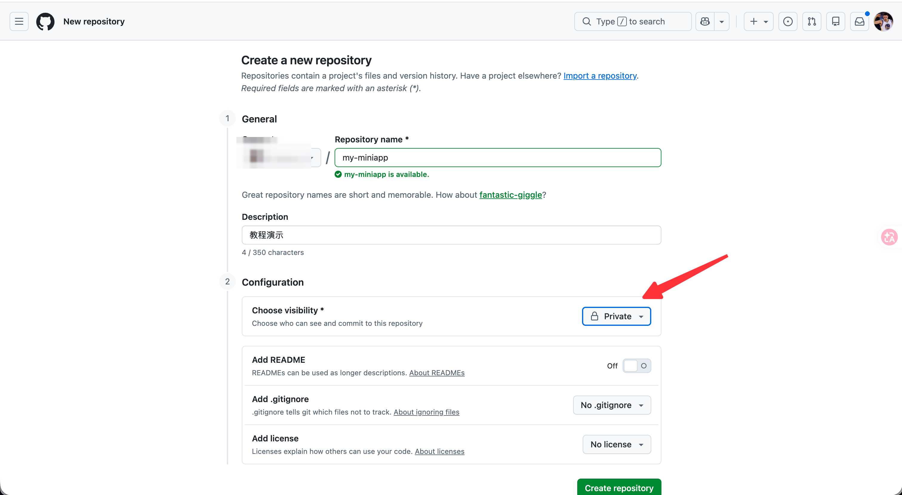
创建完成后，你会看到一个页面，里面有你的仓库地址。格式是 https://github.com/<你的GitHub用户名>/<仓库名>。这个地址先留着，第 5 章我们会用 Git 把代码推上去。
3.2 微信小程序账号：你的小程序身份证
小程序必须有一个官方身份才能在微信里跑。注册微信小程序账号，用的是微信的「公众平台」。
注册步骤：
- 打开微信公众平台官网，点「立即注册」
- 选择注册类型：这里选「小程序」
微信公众平台注册入口，「立即注册 → 小程序」：
- 用邮箱注册，注意邮箱不能是之前注册过公众号或小程序的（一个邮箱一个身份）
- 填写邮箱激活邮件里的验证码
- 关键一步：选择主体类型。个人开发选「个人」。个人主体的意思是，这个账号属于你个人，不是公司。它的边界要提前知道：个人主体不能开通微信支付（收款）、部分类目受限。但做测试、分享、内容展示的小程序，完全够用。FatTI 就是个人主体账号
- 填写管理员信息，一般就是你自己，需要扫码验证身份（用你准备的那个手机号对应的微信）
- 注册完成后，登录公众平台后台，进入「小程序信息」，填写小程序的名称、头像、介绍。名称有命名规则，一旦确定想改比较麻烦，想清楚再填
小程序信息页，填写名称、头像、介绍：
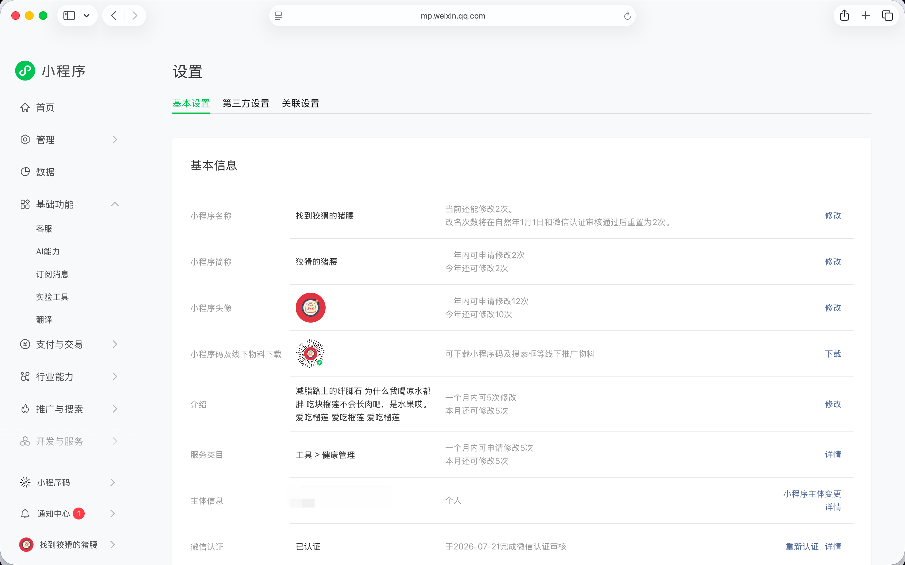
注册好后，你会拿到一串关键字符：AppID（小程序唯一标识）。它是你的小程序在微信世界里的身份证号。找到它的路径是：公众平台后台 →「开发管理」→「开发设置」→ 找到「AppID」。
微信小程序后台的「开发管理」里，开发设置页面可以看到 AppID：
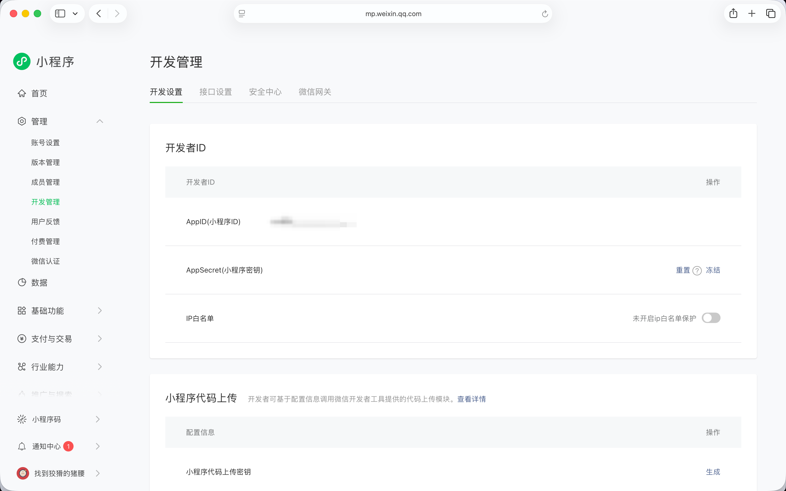
注意：截图时请务必把 AppID 打码。教程里统一用示例值 wx1234567890abcdef 代替（这只是示例，不是你的真实值）。你的真实 AppID 要自己收好，后面第 5 章导入项目、第 11 章上传时都会用到。
这里补充一句：微信里还有一样东西叫 AppSecret（密钥），它是调用微信接口时用的密码，在同一个页面可以生成。AppSecret 的保密级别极高，千万不要截图、不要提交到 GitHub、不要发给任何人。 如果泄露了，可以在后台重置。
3.3 云服务器：你的 24 小时店面
前面说过，服务器是一台 24 小时开机的电脑。等第 10 章接入 AI 后端时，你需要它。现在买的好处是早买早熟悉，新用户优惠也多。
购买步骤（以腾讯云轻量应用服务器为例，其他云厂商流程类似）：
- 打开云厂商官网，找到「轻量应用服务器」
- 选择套餐。FatTI 用的是 2C2G（2 核 CPU、2G 内存）的入门配置，对个人项目足够。操作系统选 CentOS 或 Ubuntu 都可以（这是服务器上的系统，和你电脑上的系统无关）。地域选香港。为什么是香港？因为国内地域的服务器，绑定域名给用户访问网站，必须做 ICP 备案：填资料、传证件、等审核，周期长又麻烦。香港地域免备案，个人项目实测完全够用，延迟也完全可以接受
- 购买时长：可以先买一个月试水，或者按年买（年付通常更划算，新用户常有优惠）
云服务器购买页，选择轻量应用服务器套餐（2C2G、系统选 CentOS/Ubuntu）：
- 购买完成后，进入云厂商的控制台，找到「实例」列表。你会看到你的服务器，状态是「运行中」，还会看到一个「公网 IP」。公网 IP 就是这台服务器在互联网上的地址，格式像
1.2.3.4
云服务器控制台，实例状态「运行中」，能看到公网 IP（打码）：
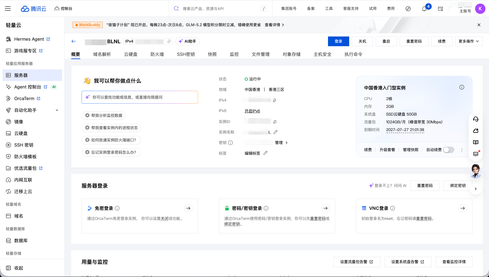
- 关键配置：安全组 / 防火墙。云厂商默认是「封闭」的，你必须显式放行某些端口，外面的访问才能进来。我们要放行三个端口：22（SSH 远程登录）、80（HTTP 网页）、443（HTTPS 加密访问）。在控制台找到「防火墙」或「安全组」设置，添加规则放行这三个端口
安全组/防火墙设置，放行 22、80、443 端口：
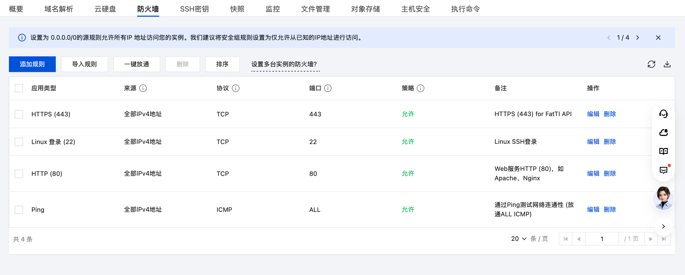
放行规则的原则：只开你需要用的端口，其余保持关闭。 这是服务器安全的第一课。
现在这台服务器先闲置着，第 10 章部署后端时我们会回来用它。你可以把购买操作拆成两步：第 5 到 9 章先不买，等到第 10 章前再回来买。看你的节奏。
3.4 域名：你的招牌
域名是服务器的「门牌号」，人类可读的名字。用户访问你的服务器，不用记 1.2.3.4 这串数字，而是记 example.com 这样的名字。
域名在哪买？本项目推荐在海外域名注册商（以 NameSilo 为例）购买。原因和 3.3 的香港服务器是一套组合拳：香港服务器 + 海外注册商买域名 = 免备案组合。国内地域的服务器绑定域名对外提供网站服务，必须做国内 ICP 备案；而在海外注册商买域名，也不需要国内实名认证，不用上传证件、不用等审核。这些麻烦全省掉了，个人项目完全够用。
购买步骤（以 NameSilo 为例）：
- 打开 NameSilo 官网，注册一个账号（邮箱 + 密码即可）
- 在搜索框输入你想要的域名名字，比如
myfatti，后缀选.top、.xyz这类便宜后缀。.top这类后缀价格通常很低，首年几美元到十几美元，也就是几十元人民币 - 确认域名没有被注册（被注册的会有提示，换个名字或后缀即可），加入购物车结算。NameSilo 支持支付宝等常见支付方式，以你实际看到的为准
- 建议顺手开启 WHOIS 隐私保护（Privacy）。不开启的话，你的注册信息（姓名、邮箱、电话）会被公开查询到，垃圾邮件和骚扰就来了。NameSilo 的 Privacy 通常免费或低价，值得开
NameSilo 域名购买页，搜索你想要的域名并加入购物车结算：
买完以后，域名就在你名下了。进入「域名管理」页面，你会看到刚买的域名和它的设置入口，比如 WHOIS 隐私保护的开关、Nameserver（域名服务器）设置。注意：海外注册商买的域名不需要国内实名认证，这是它和国内注册商最大的区别。
NameSilo 域名管理页，查看已购域名、隐私保护与 Nameserver 设置：
买好域名以后，你就有了一块真正属于自己的「招牌」。域名是我们的老朋友，第 1 章说过，它是门牌号；第 3.5 节我们要把它接上 DNS 查号台，到时要把域名的 Nameserver 改成 Cloudflare 给的那两个，在 NameSilo 的域名管理页里就能改。
3.5 DNS：把招牌指向店面
买好域名后，它还没有指向任何东西。现在要把域名和服务器绑在一起，靠的是 DNS（第 1 章说过的「查号台」）。
我们用 Cloudflare 来做这件事，因为它免费、稳定，还自带 CDN 加速（CDN 就是把你的内容复制到世界各地节点，用户访问更快）。当然，直接用云厂商自带的 DNS 解析服务也可以，原理一样。
在 Cloudflare 添加站点：
- 注册/登录 Cloudflare，点「Add a site」（添加站点），输入你的域名
- 选择免费方案（Free）
- Cloudflare 会要求你扫描现有 DNS 记录，然后给你两个「名称服务器」（Nameserver，格式像
xxx.ns.cloudflare.com） - 回你的域名注册商，把域名的 DNS 服务器改成 Cloudflare 给的那两个。等生效（几分钟到几小时）
- 回到 Cloudflare，等状态变成「Active」（已激活）
然后添加一条 A 记录（把域名指向服务器 IP）：
- 进入 Cloudflare 该域名的「DNS」面板
- 点「Add record」（添加记录）
- 类型选 A，名称填
@（代表域名本身，如example.com），IPv4 地址填你服务器的公网 IP（用1.2.3.4占位，截图请打码），开启代理（橙色云朵）即可 - 如果你想用
api.example.com这样的子域名（第 3.6 节和微信合法域名会用到），再添加一条，名称填api，IP 填同一个
Cloudflare 的 DNS 面板，添加 A 记录，把域名指向你的公网 IP（打码）：
验证 DNS 是否生效：在终端输入 ping example.com（换成你的域名），如果返回了你服务器的 IP，说明查号台已经连通。注意 DNS 生效有延迟，几分钟到几小时不等，别着急。
3.6 微信公众平台配置「request 合法域名」
最后一站。微信有个安全机制：小程序里发起的网络请求，只能访问「开发者提前登记过的域名」，不能随便访问任何地址。这个登记的地方，叫「request 合法域名」。
为什么微信要这样？可以理解成小区物业：快递员（小程序请求）只能进登记过的住户家（合法域名），不能满小区乱串。这是保护用户数据和隐私的安全设计。
配置步骤：
- 登录微信公众平台，进入「开发管理」→「开发设置」
- 找到「服务器域名」区域，点「修改」
- 在「request 合法域名」里，添加你的后端接口域名。格式必须是
https://开头的完整地址，比如https://api.<你的域名>（注意：<你的域名>要换成你买的真实域名，这个地址只在本教程里以占位形式出现）
微信公众平台的 request 合法域名配置，添加 https://api.<你的域名>：
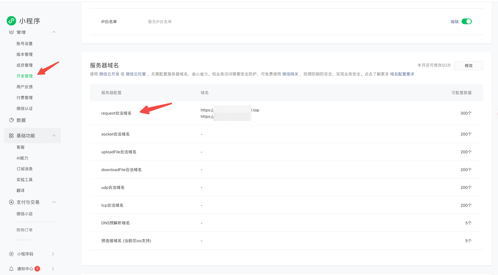
- 提交保存。微信会在几分钟内校验这个域名有没有配置 HTTPS。所以这一步通常放在第 10 章后端部署完成、HTTPS 开通之后再配置，效果最好。现在先知道「有这么个地方」，记住路径就行
到这里，五张入场券全部办齐。你现在的状态是：代码有 GitHub 放，小程序有 AppID 身份，服务器买好了（或暂时还没买），域名买好了（免备案），DNS 把名字指向了服务器，微信也登记了合法域名。万事俱备，可以开始真正的「造」了。
自查清单
- GitHub 账号注册完成，创建了第一个仓库（建议私有）
- 微信小程序账号注册完成，拿到了 AppID，并且知道 AppSecret 是最高机密
- （可选，第 10 章前必做）云服务器已购买，防火墙放行了 22/80/443
- 域名已在海外注册商（如 NameSilo）购买，无需国内实名认证
- Cloudflare 添加了站点，DNS 添加了 A 记录指向服务器（打码）
- 我知道 request 合法域名的配置入口在哪，并且知道必须是
https://开头 - 我全程没有在任何截图里暴露真实 AppID、密钥、IP、域名
本章小结
- 五个账号/服务：GitHub（代码的家）、微信小程序（身份）、云服务器（店面）、域名（招牌）、DNS + 合法域名（把招牌指向店面）
- AppID 是项目身份证，AppSecret 是最高机密，泄露了要重置
- 服务器防火墙只放行需要的端口：22、80、443
- 香港服务器 + 海外域名（如 NameSilo）= 免备案组合，DNS 生效有延迟
- request 合法域名是微信的安全机制，必须是 HTTPS 开头的完整域名
第 4 章，回到你的电脑前，我们要做一件「让 AI 先学会规矩」的事情：给 Cursor 装技能。
让 AI 先学会规矩：Skills 是什么、怎么装
理解「给 AI 装技能」这件事，学会安装本教程全程要用的 skills，并验证它真的生效了。
4.0 先聊两句
第 1 章我们说过，AI 编程的正确姿势是「AI 负责快速产出，你负责提需求和验证」。但这里有个隐蔽的问题：你该怎么向 AI 提需求？
如果你每次都对 AI 说「帮我做个小程序」，它给你的东西会非常泛泛，甚至离题万里。就像你请了一位新员工，但不告诉他公司的规章制度、工作流程，他只能自由发挥。
Skills 就是来解决这个问题的。它是给 AI 的「工作手册」或「技能包」。装上它以后，AI 在干活时会自动遵循里面的规矩：先聊需求再动手、动手前先写计划、完成前先验证、踩坑要记下来。这样一来，AI 从一个「灵感型员工」变成了一个「靠谱型员工」。
这一章我们先把概念讲清楚，然后把本教程用到的 skills 清单给你，最后教你安装 skill 的方法（主推在对话里让 agent 装，也讲自己动手的备选）并验证生效。全程实操，但很轻量。
4.1 什么是 AI Skills
先打个比方。
想象你开了一家小店，雇了一个非常聪明的新员工。这个员工什么都懂一点，但你如果只说「你去进货吧」，他可能进一车花里胡哨但卖不动的货。于是你给他一本《店员手册》：进货要先看库存、先看顾客反馈、下单前要填表格、到货要验收。从此他的干活质量立刻稳定了。
Skills 就是这本《店员手册》。它是一个装在项目里的文件夹，里面用 Markdown（一种轻量标记语言，就是你现在看到的正文这种格式）写清楚一套规则。Cursor 里的 AI 在开始干活前，会先「读手册」，然后按照手册的流程工作。
具体到代码世界：一个 skill 就是一个文件夹，里面有一个叫 SKILL.md 的主文件。这个文件里写的是「什么时候用这个技能」「用之前要做哪些准备」「干活分哪几步」「做完怎么算合格」。
比如我们后面会反复用到的 writing-plans（写计划）这个 skill，它的手册会告诉 AI：拿到一个需求，先别急着写代码，而是先拆解任务、列出步骤、标注风险，写成一份计划文档。AI 照做以后，你的项目就会从「走一步看一步」变成「按图施工」。
Skills 的好处归纳起来三点：可复用（一套规则到处用）、可分享（别人能直接拿你的 skill 用）、可积累（你踩过的坑能写进手册，让 AI 下次不再犯）。FatTI 项目后面有专门的「Ratchet（棘轮）」机制，把每次踩的坑写回手册，就是这个思路。
4.2 本案例用到的 skills 全清单
FatTI 项目实际用到了 15 个 skills。它们不是一次全装上，而是分布在项目的不同阶段使用。我们把清单列在这里，每个 skill 配一句话用途和使用时机。你现在不用逐个记住，等用到的那一章，会回来对照。
| Skill | 用途（一句话） | 使用时机 |
|---|---|---|
superpowers | 技能调度中枢，帮 AI 决定该调用哪个技能 | 每次会话开始 |
brainstorming | 动手前先聊清楚需求 | 任何新功能、新内容 |
writing-plans | 把需求拆成可执行计划 | 动码之前 |
executing-plans | 按计划逐条执行 | 计划批准后 |
verification-before-completion | 验收通过才叫完成 | 每个任务收尾 |
pm-skills | 项目推进与沟通管理 | 排期、风险 |
frontend-design | 精美 UI 视觉规划（本项目主视觉技能） | 做页面视觉 |
ui-ux-pro-max | 设计决策库（可选检索） | 视觉决策参考 |
loop | 周期/事件驱动循环 | 迭代节奏 |
systematic-debugging | 系统化查 bug | 出 bug 时 |
requesting-code-review | 请 AI 评审代码 | 大改前 |
receiving-code-review | 理性接收评审意见 | 收到评审时 |
kill-ai-slop | 去掉「AI 味」文案和视觉 | UI/文案定稿 |
taste-skill | 反模板化设计 | 官网/落地页 |
redesign-skill | 旧页面升级为高级质感 | 改版时 |
看一眼这张表，你会发现它的设计逻辑：先聊清楚（brainstorming），再写计划（writing-plans），再执行（executing-plans），做完必须验证（verification-before-completion），遇到 bug 系统查（systematic-debugging）。 这套流程就是我们全程跟练的节奏。本教程第 5 章以后，你会看到我们每一步都遵循它。
4.3 安装方式（推荐）：在 Cursor 对话里把 GitHub 地址发给 agent
skills 通常以「仓库」的形式发布（还记得第 3 章注册过的 GitHub 吧？）。但你不需要自己在终端里敲 git clone：直接把 skill 的仓库地址发给 Cursor 里的 agent，它会帮你完成克隆、放到正确位置（.cursor/skills/），并确认安装成功。对新手来说，这是最不容易出错的方式。
具体步骤（在 Cursor 里操作）：
第一步，打开项目文件夹。 在 Cursor 里打开你的项目文件夹。假设叫 my-miniapp（第 5 章会正式创建，现在可以先建一个空文件夹占位）。
第二步，把仓库地址发给 agent。 在 Cursor 的对话输入框里，把 skill 的 GitHub 仓库地址粘贴进去，加上一句请求，比如「帮我把这个 skill 安装到项目的 .cursor/skills/ 目录」。skill 仓库地址由 skill 发布方提供，格式类似 https://github.com/<发布方>/<skill仓库名>（示意，以你找到的为准）。
第三步，同意 agent 的计划。 agent 会自己去克隆仓库，并把 skill 放到项目根目录的 .cursor/skills/ 文件夹下（这是 Cursor 约定的技能放置区）。它一般会先告诉你它打算怎么做，你可以直接同意。
在 Cursor 对话中把 GitHub 地址发给 agent，它回复正在安装、安装完成：
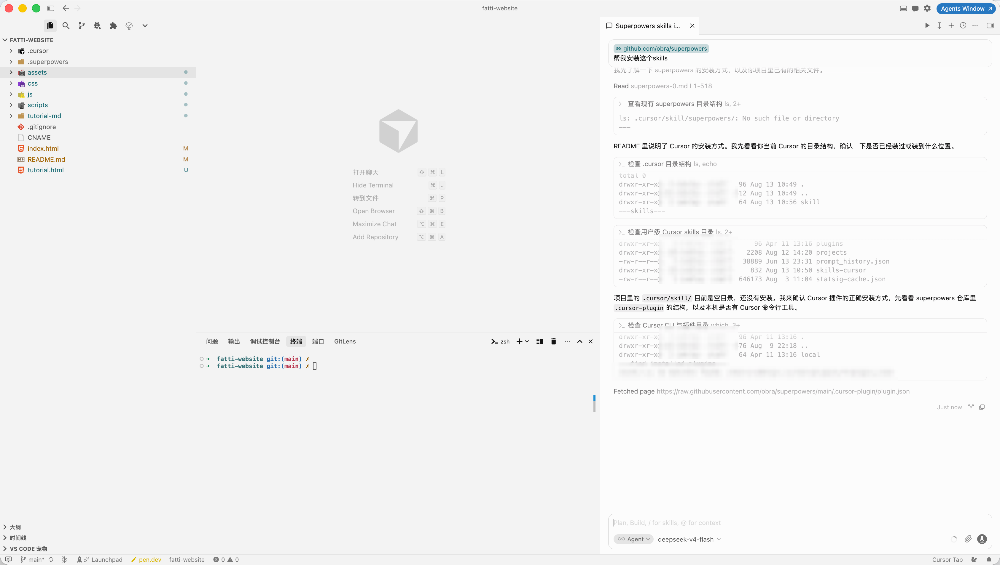
第四步，确认安装结果。 agent 完成后，在 Cursor 里打开项目的 .cursor/skills/ 目录，看到克隆下来的文件夹，里面有 SKILL.md 文件，就说明装好了。
项目 .cursor/skills/ 目录，文件树里能看到 superpowers、writing-plans 等子目录：
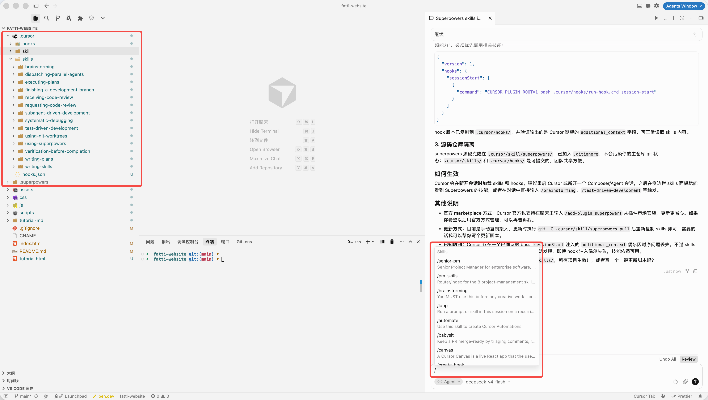
.cursor/skills/ 目录如果有多份 skill 要装，把它们的仓库地址分次发给 agent，或一次列出让它逐个安装。.cursor/skills/ 是 Cursor 约定的「技能放置区」，AI 会自动去这里找技能。如果某个 skill 是「全家桶」（一个仓库包含多个 skill），它的子目录会各自带一个 SKILL.md，比如 writing-plans/SKILL.md、brainstorming/SKILL.md。原则是：每个 skill 一个文件夹，文件夹里要有 SKILL.md。
4.4 备选：自己动手用终端克隆（想了解原理时）
主推方式（4.3）已经把活交给 agent，你可以完全不碰终端。但如果你想了解背后的原理，或者就是喜欢自己动手，也可以手动克隆，效果完全一样。
具体步骤（在终端里操作）：
第一步，打开终端，进入你的项目根目录：
cd 你的项目文件夹路径第二步，克隆 skill 仓库到项目：
git clone <skill仓库地址> .cursor/skills/<skill名字>这条命令的意思是：把 skill 仓库克隆到 .cursor/skills/ 下的 <skill名字> 文件夹。如果多个 skill 是分开的仓库，就重复执行，每个克隆到自己的子文件夹。
装好的 skill 在 Cursor 对话里可以直接点名使用，比如「用 writing-plans 帮我把这个需求写成计划」。Cursor 会自动加载对应的 SKILL.md 作为工作手册。
两种方式不冲突、结果相同：不管是你手动克隆，还是让 agent 帮你装，skill 最终都会落在项目的 .cursor/skills/ 目录下，Cursor 都能识别和使用。对本教程来说，掌握主推方式（4.3）加一个验证动作（4.5）就够了。
4.5 怎么验证 skill 生效
装没装对，要验证。验证分两步。
第一步：确认文件在。 在 Cursor 里打开 .cursor/skills/ 下的某个 skill 文件夹，点开 SKILL.md，能看到一篇有结构的说明文档，里面有「用途、使用时机、步骤」等内容。
在 Cursor 里打开某个 skill 的 SKILL.md，你会看到它的说明内容：
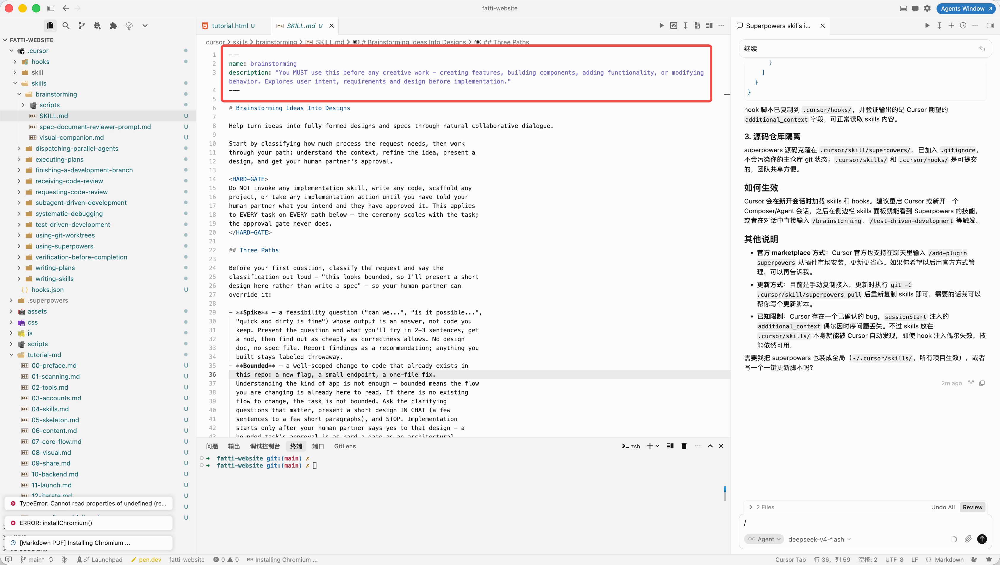
第二步：确认 AI 真的用了它。 在 Cursor 的对话面板里，直接提出一个和该 skill 相关的请求，比如对 brainstorming 说「我想做一个 xx 功能，帮我把需求聊清楚」。如果 skill 生效，AI 在回复时会表现出「先问几个问题、先确认需求边界」的行为，而不是直接给方案。有些 Cursor 版本会在对话里显示 skill 被加载的提示。
在 Cursor 对话中触发 skill，你会看到 AI 表现出遵循该 skill 的痕迹：
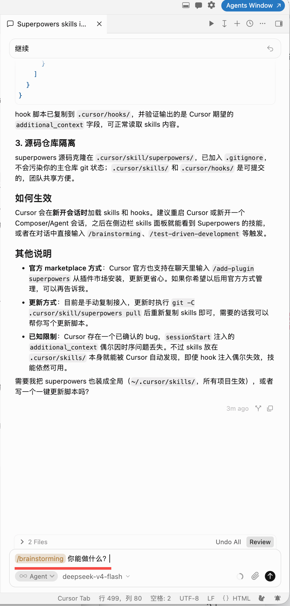
一个实用的判断标准：生效的 skill 会改变 AI 的行为模式。 如果 AI 的行为完全没变化，说明 skill 没被加载，检查一下文件路径是不是 .cursor/skills/<名字>/SKILL.md，以及文件名大小写。
到这里，你已经完成了「给 AI 立规矩」这件事。从下一章开始，我们每一章都会用到这些 skills：先聊需求，再写计划，再动手，最后验证。你会发现，有了这套流程，AI 的质量稳定得不像话。
自查清单
- 我能用一句话解释什么是 AI Skills（工作手册/技能包）
- 我知道 skill 放在项目的
.cursor/skills/目录，每个 skill 一个文件夹 - 我在 Cursor 对话里把 skill 的 GitHub 地址发给 agent，它帮我安装好了，
.cursor/skills/下有SKILL.md文件 - 我在 Cursor 里打开过
SKILL.md，看到了它的说明 - 我在对话里触发过 skill，AI 的行为按手册改变了
- 我扫过 4.2 的 15 个 skill 清单，知道它们是干嘛的
本章小结
- Skills 是给 AI 的「工作手册」，让 AI 从自由发挥变成按规矩办事
- 本教程用 15 个 skills，核心循环是：聊需求、写计划、执行、验证、查 bug
- 主推安装：在 Cursor 对话里把 skill 的 GitHub 地址发给 agent，让它安装配置
- 备选：自己用终端
git clone（想了解原理时） - 验证生效的标准：AI 的行为按 skill 手册改变了
第 5 章，重头戏来了：搭骨架，跑起第一个能打开的小程序。
搭骨架：跑起第一个能打开的小程序
完成从空目录到「微信模拟器里显示 hello world」的完整流程。这一章之后，你就拥有一个「活着」的小程序了。
5.0 先聊两句
前三章我们一直在「准备」，这章开始真正「造」。
这里请记住我们反复强调的一句：从这一章到第 9 章，全程不需要服务器，不需要域名，一分钱不用花。 所有功能都跑在用户手机里（现在是跑在模拟器里）。你要做的所有事，就是本地写代码、本地看效果。
为什么能做到？因为我们做的是「纯前端」小程序。还记得第 1 章的餐厅比喻吗？纯前端的意思是：不用后厨，点菜、炒菜、上菜全在大堂完成。对测试、计分、分享这类功能，前端自己就能干完。等第 10 章需要 AI 算热量了，我们才请后厨（后端）出山。
好，开工。这一章有四个步骤：初始化项目、认识目录、导入微信开发者工具、在模拟器里看到你的页面。
5.1 初始化项目：交给 agent 来搭 Taro 脚手架
我们的小程序用什么技术栈？第 1 章提过，Taro + React + TypeScript + Sass。Taro 是一套「跨端小程序框架」，简单说：你用一套代码写，它可以编译成微信小程序、支付宝小程序等多个平台的小程序。我们只需要微信平台，但选 Taro 的好处是以后想扩展别的平台，代码不用重写。
初始化一个 Taro 项目，我们用一个叫「脚手架」的东西。脚手架（Scaffold）是一个帮你自动生成项目基础文件结构的工具，像搭房子的预制框架：你喊一声「搭个 Taro 房子」，它啪地一声把墙、柱子、门窗都立好了。
背后其实是一条命令 pnpm create taro（脚手架命令），但你不需要记住和敲它，Cursor 的 agent 会替你执行。这一节的全部操作都在 Cursor 对话里完成：你说一句需求，剩下的交给 agent。
具体步骤（在 Cursor 里操作，全程不手敲命令）：
第一步，打开父目录，新建对话。 在 Cursor 里打开一个文件夹，作为你的项目父目录（比如桌面或你的工作目录），然后新建一个对话。待会创建的项目会放在这个文件夹里面。
第二步，用自然语言说清需求。 在对话里把你想要的东西讲清楚，可以直接复制这句模板话术：
「帮我用 Taro 初始化一个微信小程序项目：框架用 React，语言用 TypeScript，样式用 Sass。项目名叫 my-miniapp。」
说不准细节也没关系，只要告诉 agent「一个 Taro 的微信小程序项目，React + TypeScript + Sass」，它就能接着干活。
第三步，等 agent 执行初始化。 agent 会自己在终端里执行初始化命令，并在引导式问答（项目名、框架、语言、CSS、目标平台）里替你选好 React + TypeScript + Sass + 微信小程序。你只需要等它做完，看着对话里它汇报的结果。
第四步，确认依赖装好、编译启动。 agent 会接着安装项目依赖并启动编译。你不需要记得这些命令，只要确认 agent 汇报「编译成功、dist 已生成」即可。第一次安装依赖要几分钟，耐心等它跑完。
第五步，看结果（验证）。 「终端」面板在 Cursor 里通常是面板可开的，agent 跑命令时会显示实时进度。第一次编译要几分钟，看到没有红色报错，就算成功。命令不用你敲，但结果要你看。
在 Cursor 对话中让 agent 初始化 Taro 项目，你提需求，agent 执行并汇报：
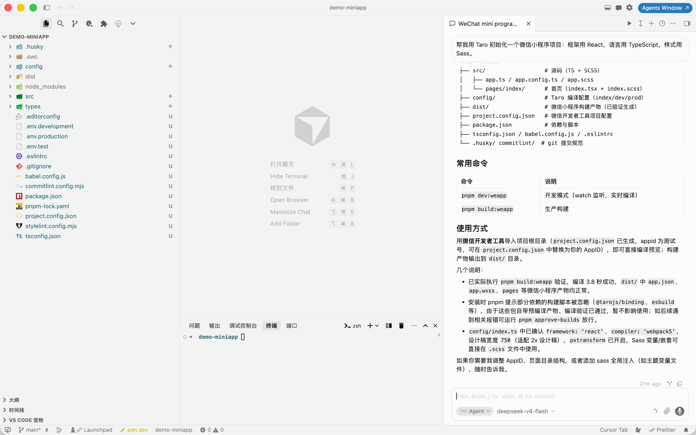
如果你想了解背后发生了什么：下面这三条命令是 agent 替你在终端里执行的，了解即可，不必自己敲。pnpm create taro 启动脚手架引导界面（项目名、框架、语言、CSS 方案、目标平台这些问答都在里面）；pnpm install 安装项目所有依赖包（就是第 2 章说的「手机应用商店帮你装 App」，这里装的是代码库）；pnpm run dev:weapp 启动 Taro 的「监听编译」，把源代码编译成微信小程序代码，输出到 dist 文件夹，并且一直监听你的修改，一改就重新编译。第一次编译需要一点时间，编译成功后这个命令会一直跑着，agent 会把它挂到后台。
pnpm create taro
pnpm install
pnpm run dev:weapp5.2 认识项目目录结构
现在在 Cursor 里打开你的项目文件夹（「File → Open Folder」），你会看到一堆文件和文件夹。别慌，我们只认识几个关键角色。
刚初始化的项目目录，大致长这样：
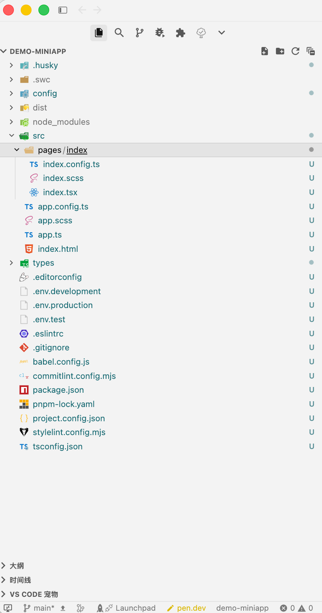
逐个认识：
src/：你的全部代码都在这。 之后我们几乎只在src里干活src/pages/：页面文件夹。每个页面一个子文件夹，比如index就是首页src/app.config.ts：整个小程序的「总配置文件」，里面登记了有哪些页面、哪个是默认打开页等。这是最重要的文件之一，第 7 章我们会打开它改路由src/app.scss：全局样式文件，整个小程序共享的样式src/app.tsx：小程序的入口文件，一般不用动config/：Taro 的编译配置，一般不用动dist/：编译产物，就是你最终要上传给微信的东西。这个文件夹是自动生成的，永远不要手改它package.json：项目清单，记录了项目依赖了哪些库、有哪些命令project.config.json：微信开发者工具的配置文件，告诉微信工具「我的编译产物在 dist，AppID 是什么」
我们打开 src/app.config.ts 看一眼。它的内容大致是一段代码，声明了小程序有几个页面、默认页是哪个。这是整个小程序的「总路由表」。
编辑器打开 src/app.config.ts，你会看到页面路由配置代码：
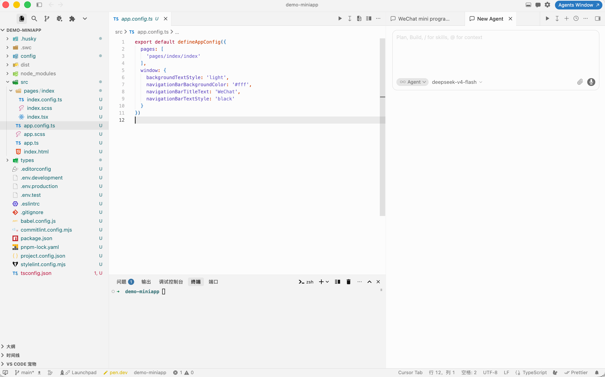
现在你不用看懂这段代码，只需要记住：以后新增页面，要到这个文件里登记。 第 7 章我们会实际操作一次。
5.3 用微信开发者工具导入项目
现在把编译好的小程序「拿」进微信开发者工具。
- 打开微信开发者工具（第 2 章装的那个）
- 登录后，在「项目」界面点「导入」（或「+”号」新建）
- 项目目录选择你的
my-miniapp文件夹（注意：是项目根目录，不是dist） - 关键：AppID 那里，填你第 3 章拿到的真实 AppID（
wx1234567890abcdef只是示例）。如果你还没注册小程序，也可以先选「测试号」（微信工具提供的临时 AppID，仅供本地开发），以后再换成正式号
微信开发者工具导入项目，选择项目目录并填写 AppID：
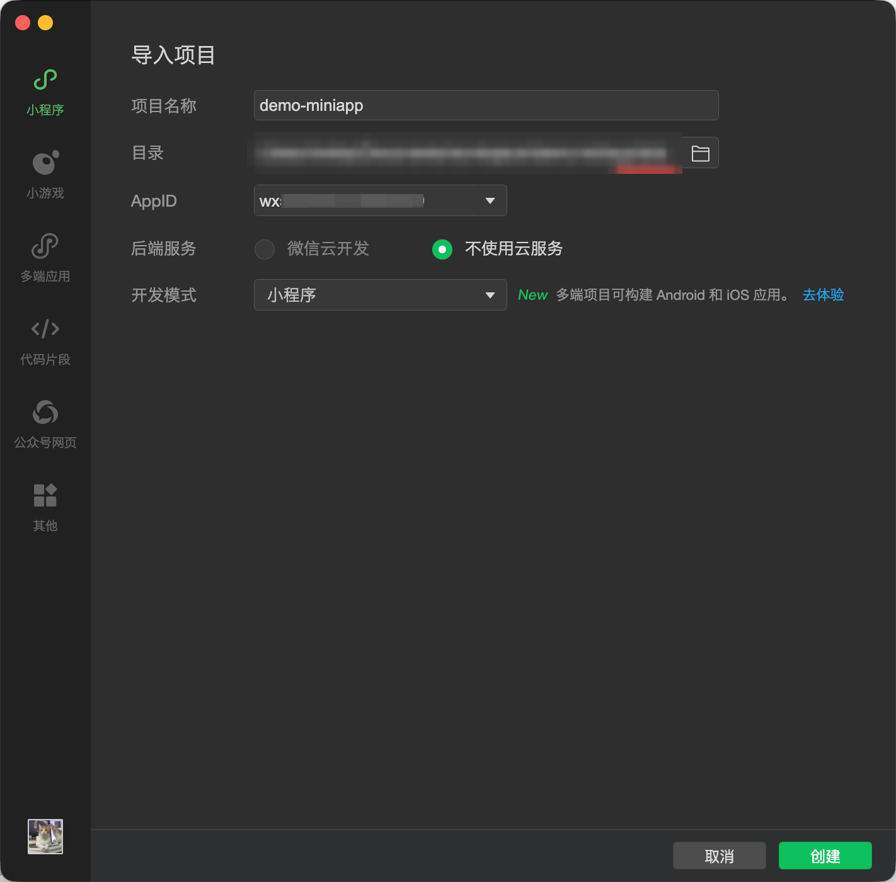
导入后，微信开发者工具会读取 project.config.json 里的 miniprogramRoot 配置（指向 dist），自动把编译产物加载进来。第一次加载可能提示需要重新编译，确认即可。
5.4 第一次在模拟器里看到自己的页面
导入完成，微信开发者工具会打开「模拟器」：一个模拟手机微信环境的小窗口，你编译出来的小程序就在这里显示。
如果一切正常，模拟器里会显示 Taro 默认的首页，通常有一行欢迎文字。这就是你的第一个「活着」的小程序页面。
微信开发者工具模拟器，显示首页的 hello world 效果：
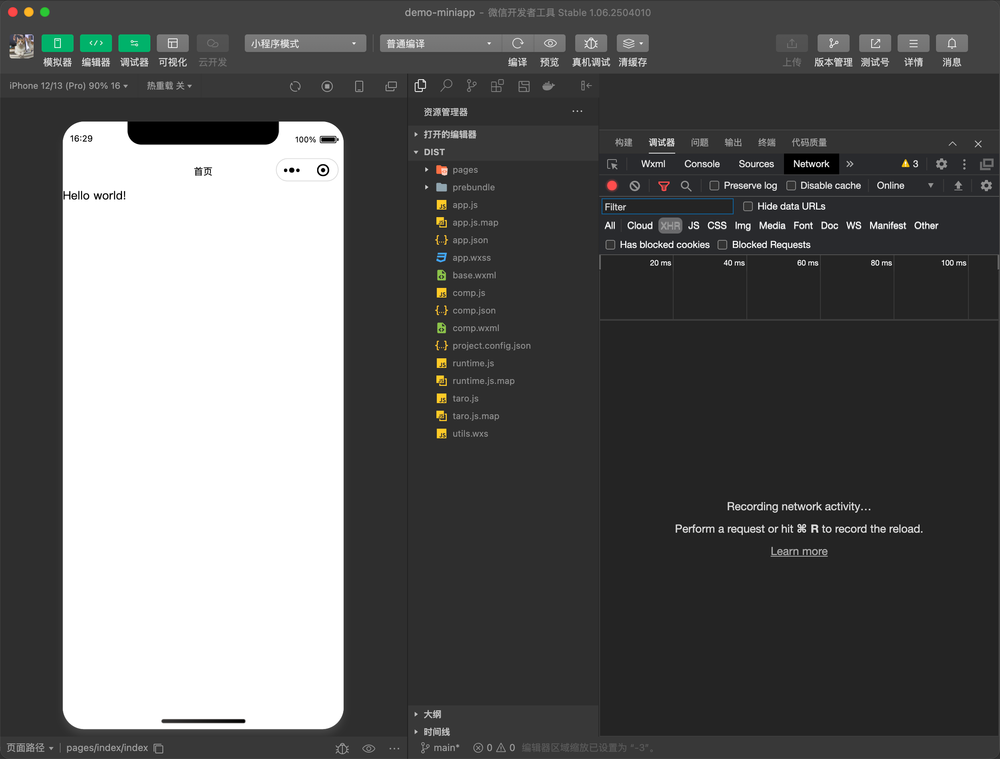
看到这个画面，恭喜你，你已经走完了「写代码 → 编译 → 显示」的完整流程。从现在起，你做的每一次修改，都能在这个模拟器里立刻看到效果。
如果模拟器里是空白或报错，按这个顺序排查：
pnpm run dev:weapp还在跑吗？它挂了页面就编译不出来，让 agent 帮你重新启动编译dist文件夹存在且有内容吗？没有就让 agent 重新跑一次编译- 导入时选的目录对吗？必须是项目根目录
- 报错信息里如果有「AppID」字样，检查是不是测试号没选对
最后，把这一章的成果推到 GitHub（第 3 章创建的那个仓库），让代码有个安全的家。这一步同样交给 agent。
在 Cursor 对话里对 agent 说：「帮我把这个项目提交到 GitHub，推到我在第 3 章建的仓库。」如果它需要仓库地址，把你的 GitHub 仓库地址（https://github.com/<你的GitHub用户名>/<仓库名>.git）发在对话里即可。agent 会替你完成 git init、git add、git commit、设置远程仓库地址、git push 的全套动作，并在完成后汇报结果。
提交时 agent 会自动遵守 .gitignore，node_modules、dist 等大文件夹不会进仓库（Taro 已经帮你配好）。你确认 push 成功后，代码就有了「存档」，第 12 章我们会用到它。
如果你想了解背后发生了什么：下面这几条命令 agent 会替你执行，了解即可，不必自己敲。
git init
git add .
git commit -m "初始化小程序骨架"
git remote add origin https://github.com/<你的GitHub用户名>/<仓库名>.git
git push -u origin main（如果 Taro 已经自动初始化过 Git 仓库，agent 会跳过 git init。）
到这里，骨架搭完了。你有了一个能打开、能显示、有版本管理的小程序项目。接下来的每一章，都是在这个骨架上长肉。
自查清单
- 我在 Cursor 对话里让 agent 初始化了 Taro 项目，选了 React + TypeScript + Sass
- agent 帮我装好了依赖并启动了编译，我看到编译成功、模拟器能出页面
- 我认识了
src、src/pages、src/app.config.ts、dist这些关键目录 - 我在微信开发者工具里导入了项目，填了 AppID（真实号或测试号）
- 模拟器里能看到 hello world 页面
- 我让 agent 把代码推到了 GitHub 仓库
本章小结
- 纯前端承诺兑现：这一章开始，零服务器零域名零花费
- Taro 脚手架生成项目骨架，在 Cursor 对话里让 agent 执行，选 React + TypeScript + Sass
src是你的主战场，dist是自动生成的产物，永远不手改- 微信开发者工具的模拟器是你最忠实的「验收官」，每改必看
- 让 agent 把代码推到 GitHub，有了第一份「存档」
骨架有了，第 6 章开始长肉：先把产品的灵魂，内容和数据做出来。
第一个功能：内容为王（题库与人格档案）
学会「让 AI 帮你产出内容数据」，这是产品差异化真正的起点。做完这一章，你的小程序里就有了能测、能玩、能分享的「内容灵魂」。
6.0 先聊两句
骨架搭好了，现在开始长肉。但很多新手第一反应是「先做页面」。这是一个常见的误区。
想一想：用户点开你的小程序，他先看到什么？不是页面多漂亮，而是「这里有什么好玩的」。对一个测试类小程序来说，好玩 = 题目有意思 + 结果有梗 + 让人想分享。这些东西，全部来自「内容」，不是来自「代码」。
所以第 6 章我们做一件事：先设计内容结构，再让 AI 把内容批量生成出来。 这一章是「产品差异化」的起点，也是「AI 编程」最能放大你能力的地方：你不会写代码，但你的品味、你的脑洞，AI 完全接得住。
照例先走一遍 skills 流程：这一章动手前，先用 brainstorming（聊需求）把「这是个什么测试、结果分几种、题目怎么设计」聊清楚，再用 writing-plans 把「生成哪些数据文件、什么结构」写成计划，最后动手。
6.1 先设计再写码：人格、维度、题库结构
一个测试类小程序的核心数据，由三层结构组成：维度、人格、题目。我们用 FatTI 的真实设计来讲解。
第一层：维度（Dimension）。 维度是「测试想测量哪些方面」。FatTI 有 4 个维度，每个维度是一对反义词：
| 维度代号 | 维度名称 | 两个极端 |
|---|---|---|
| HM | 怎么饿的 | 真饿 vs 嘴馋 |
| GS | 练不练 | 练 vs 躺 |
| BC | 听谁的 | 信玄学（听博主）vs 信热量（听秤） |
| TN | 啥时候动 | 明天 vs 现在 |
你可以把维度想象成「性格的坐标轴」。4 个维度，每根轴上 2 个极端，组合起来就是 2 × 2 × 2 × 2 = 16 种人格。这就是 FatTI 的「16 人格」来源。
第二层：人格（Persona）。 每种人格就是一个完整的「角色档案」。FatTI 把人格做成了 16 只「脂妖」，每只都有：称号、一句话定位、一段档案描述、几句口头禅、克星（敌人）、增益（buff）。比如：
- 「走火入魔」：真练，真饿，信条全来自「我刷到个博主说」
- 「明天开练」：算得很清，练得很勤，就是明天才开练
- 「猎卡妖犬」：信热量不信玄学，秤比手机还常亮
为什么人格要这么「有戏」？因为用户做完测试，拿到的不只是一个冷冰冰的类型名，而是一个有梗、有画面、想截图发朋友圈的「人设」。这是传播的关键，第 9 章我们会专门讲。
打开人格档案文件，你会看到 16 个人格的完整档案，包含称号和描述：
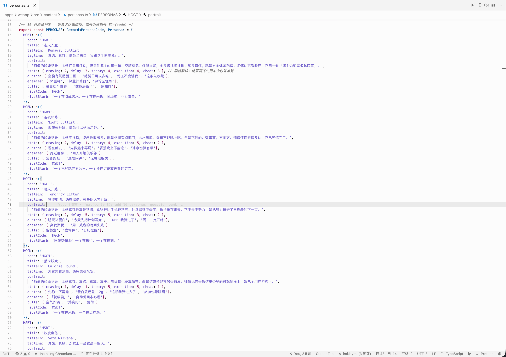
第三层：题目（Question）。 题目是测试的「原材料」。设计题目有个讲究：每道题都要能命中某个维度的某个极端。 FatTI 的题库有 64 道题（每个维度 16 道），每轮测试随机抽 12 道（每个维度 3 道）。每道题包含：题干、4 个选项、每个选项属于哪个极端。
看一道 FatTI 的真实题目：
小妖，凌晨十二点朋友发来「烧烤，来吗」，还配了张滋滋冒油的图。你咋回？ - 真饿，就等这口（命中「真饿」） - 不饿，今晚不去（命中「真饿」） - 我已经到了（命中「嘴馋」） - 今天放纵餐，必须去（命中「嘴馋」）
注意到题目设计的小心思了吗？题目里有具体的时间（凌晨十二点）、具体的场景（朋友发图）、具体的梗（烧烤）。这就是我们在真实项目里定的一条规则：题干必须首句自带情境，不许悬空说「你此刻想吃什么」。 有了情境，用户答题时有代入感，测试才好玩。
6.2 让 Cursor 生成数据文件
结构设计好了，现在让 AI 干活。数据文件用什么格式？JSON（JavaScript Object Notation，一种轻量的数据交换格式）。它长这样：
{
"id": "hm-01",
"dimension": "HM",
"prompt": "小妖，凌晨十二点朋友发来「烧烤，来吗」……",
"options": [
{ "id": "hm-01-0", "text": "真饿，就等这口", "pole": "H" },
{ "id": "hm-01-1", "text": "不饿，今晚不去", "pole": "H" },
{ "id": "hm-01-2", "text": "我已经到了", "pole": "M" },
{ "id": "hm-01-3", "text": "今天放纵餐，必须去", "pole": "M" }
]
}JSON 的妙处是：它既是人能看懂的文本，又是程序能直接读的数据。我们的数据文件，就是在 src/content/ 目录下的几个文件：dimensions.ts（维度定义）、personas.ts（人格档案）、questions.ts（题库）。
现在，打开 Cursor 的对话，用中文下命令。你不需要写代码，只需要把需求讲清楚。一个可以照抄的提示词模板：
我想在 src/content/ 下生成题库数据文件。结构是：
每道题包含 id、dimension（维度代号）、prompt（题干）、options（4 个选项，每个选项有 id、text、pole）。
维度有四个：HM 真饿vs嘴馋、GS 练vs躺、BC 信玄学vs信热量、TN 明天vs现在。
每个维度生成 16 道题，一共 64 道。题干要有具体场景和梗，首句自带情境，不要悬空。
选项要平均覆盖该维度的两个极端。先输出前 4 道给我看，我确认风格后你再一次性生成全部。注意提示词最后一句：让 AI 先输出一小部分给你看。 这是防止 AI 一次性生成 64 道不符合要求的题，浪费时间。先小样确认，再批量生成，这个技巧全程适用。
AI 生成完，你需要在编辑器里检查数据结构是否完整（有没有漏字段、重复 id）。打开数据文件，你会看到类似这样的 JSON 数据结构：
人格档案同样可以让 AI 生成。给它 16 个称号，让它补全每个档案的标签、描述、口头禅、敌人、增益。同样先出 2 个样例确认文风，再批量。
6.3 数据怎么进页面：内容即数据，页面即模板
数据生成好了，怎么让它出现在页面上？
编程里有个思想叫「内容与展示分离」。通俗讲：数据是「内容」，页面是「模板」。 模板负责「长什么样」，数据负责「是什么」。一个模板，配 16 份数据，就能显示 16 种不同的人格结果，而不需要写 16 份页面。
你可以理解成盖章：页面是印章，数据是印泥颜色。同一个印章，换不同颜色，盖出来就是不同的章。在代码里，这表现为：页面代码里写一个「循环」，把数据文件里的人格拉出来，逐个渲染。
你不需要自己写这个循环的代码，让 Cursor 帮你写，然后你在模拟器里验证。给 Cursor 的提示词可以是这样：
我在 src/content/questions.ts 里有题库数据。请做一个答题页：从题库里随机抽 12 道题，每道题显示题干和 4 个选项，点选项进入下一题。做完所有题，把答案传给结果页。写完后，按第 5 章的流程：刷新微信开发者工具，在模拟器里看页面有没有正常显示题目。如果报错，把报错信息完整复制给 Cursor，它会帮你修。
记住这一章的验收标准不是「代码跑不跑」，而是「内容够不够好玩」。技术是实现，内容是灵魂。第 7 章，我们把答题、计分、结果这条主链路彻底打通。
自查清单
- 我理解了测试的三角色：维度、人格、题目
- 我设计了自己的维度（至少 2 个，每个两个极端）和人格数量（组合数）
- 我让 Cursor 生成了题库数据文件，结构包含 id、dimension、prompt、options
- 我让 AI 先出了小样确认，再批量生成
- 我检查了数据文件，没有漏字段、重复 id
- 我在模拟器里看到题目能显示出来
本章小结
- 内容先于代码：测试类产品的灵魂是题目有梗、结果有人设
- 三层结构：维度（坐标轴）、人格（角色档案）、题目（原材料）
- FatTI 真实规模：16 人格、4 维度、64 道题、每轮抽 12 道
- 让 AI 批量生成数据的秘诀：先出小样确认风格，再一次性生成
- 内容与展示分离：页面是模板，数据是内容，一份模板配 N 份数据
内容有了，第 7 章打通主链路：答题、计分、结果页、本地存储。
核心链路：答题、计分、结果页
打通「首页 → 答题 → 计分 → 结果页 → 历史记录」这条主链路，做出一个完整可玩、可分享的测试小程序。这章做完，产品就「立」起来了。
7.0 先聊两句
第 6 章我们有了内容（题库和人格档案），第 5 章有了骨架。现在把这两样接起来，让用户能完整走一遍：打开小程序，看到首页，点进去答题，答完题出结果，结果还能留在历史里。
这条链路是测试类小程序的「心脏」。它由四块拼图组成：
- 页面路由：小程序有多个页面，用户怎么从首页走到答题页，再走到结果页
- 计分逻辑：用户的答案怎么变成结果
- 本地存储：结果怎么留在用户手机里
- 模拟器验证：整条链路跑一遍
开工前，照例先在 Cursor 对话里用 brainstorming 把链路聊清楚，用 writing-plans 把每个页面的职责写成计划，然后逐块实现。
7.1 页面与路由：首页、答题页、结果页
先说「路由」。小程序里，每个页面都有自己的地址，叫「路由」（Route，路径）。用户在页面间跳转，就是切换路由。还记得第 5 章那个 src/app.config.ts 吗？它就是路由的总登记册：每个页面必须在这里登记，才能被访问。
FatTI 的测试链路用了三个页面：
| 页面 | 路由地址 | 作用 |
|---|---|---|
| 首页 | pages/home/index | 小程序的入口，展示产品名、进馆入口按钮 |
| 答题页 | pages/quiz/index | 逐题展示题目和 4 个选项 |
| 结果页 | pages/result/index | 展示人格称号、插画、描述、保存海报按钮 |
新增页面时，有三件事要做：
- 在
src/pages/下新建页面文件夹（比如src/pages/quiz/index.tsx） - 在
src/app.config.ts的pages数组里登记新页面的路径 - 在页面里用跳转 API（比如
Taro.navigateTo）实现从首页跳答题页
这些代码让 Cursor 帮你写。给它清晰的提示词：
我在 src/pages/ 下有三个页面：home、quiz、result。请实现：
1. app.config.ts 里登记这三个页面，首页设为默认打开页
2. 首页放一个「开始测试」按钮，点击后 navigateTo 跳转到答题页
3. 答题页从 src/content/questions.ts 里随机抽 12 道题展示，点选项后进入下一题
4. 答完后跳转到结果页实现完，在模拟器里看效果。首页应该有一个明显的入口：
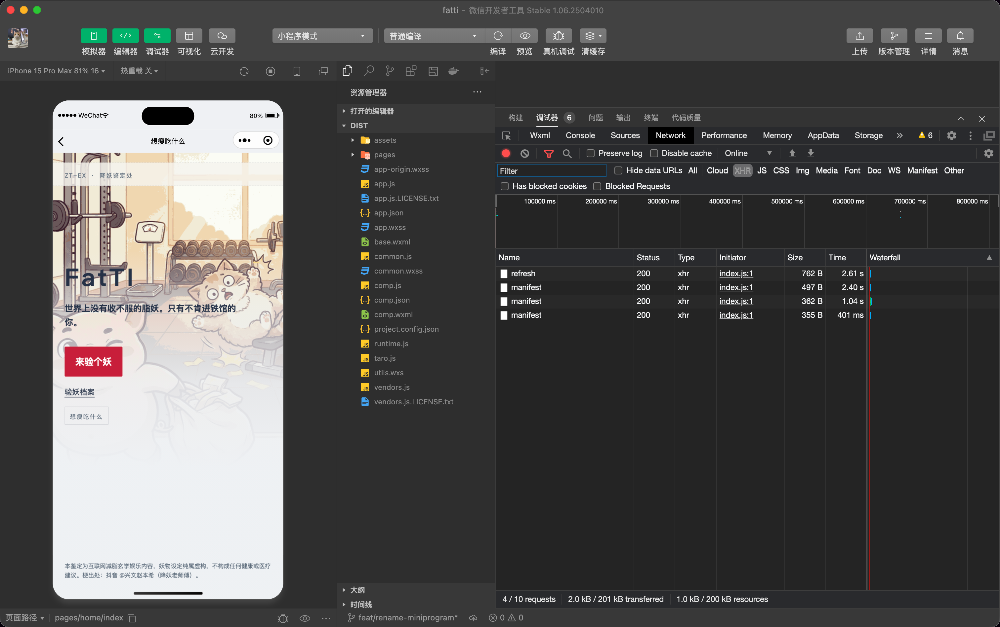
点进去，答题页应该一题一题展示，每题 4 个选项：
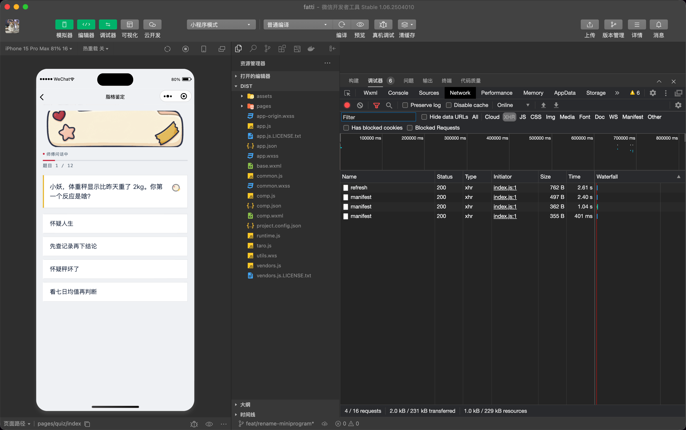
这里有个新手常见困惑：为什么页面是空白的？ 绝大多数原因是路由没登记全，或者跳转路径写错。检查 app.config.ts 里的页面路径，和 navigateTo 里的路径，必须一字不差地对应。
7.2 计分逻辑：AI 生成，你验证
题目答完了，怎么得出人格？这是计分逻辑，也是「纯前端」能干的最漂亮的一件活。
回忆第 6 章：每道题的每个选项，都标记了它命中哪个极端（pole），比如选项 A 命中「真饿 H」，选项 C 命中「嘴馋 M」。计分的思路是：统计每个维度上，两个极端各被选了多少次，哪个极端的次数多，这个维度就偏向哪边。
4 个维度，每个维度算出偏向的极端，组合成一个 4 位代码。比如「真饿 H + 练 G + 信热量 C + 明天 T」，代码就是 HGCT。这个代码对应人格档案表里的某一个人格，结果页把这个人格的数据拉出来显示就行。
这里要专门提醒一件事：计分逻辑属于「行为性代码」，改错了影响所有人。 我们的规矩是：先让 AI 写出计分函数，你再用「心智测试」验证一遍。方法是自己在纸上模拟一遍：出一道「全选 A」的答案序列，算出期望的人格，再运行代码，看结果对不对。用 verification-before-completion 这个 skill 的套路：没验证过，就不算完成。
验证通过后，答题页答完最后一题，把「每个维度的票数」传到结果页。结果页根据代码找到人格档案，展示称号、插画、描述。
模拟器里，结果页应该显示人格称号、插画和描述：
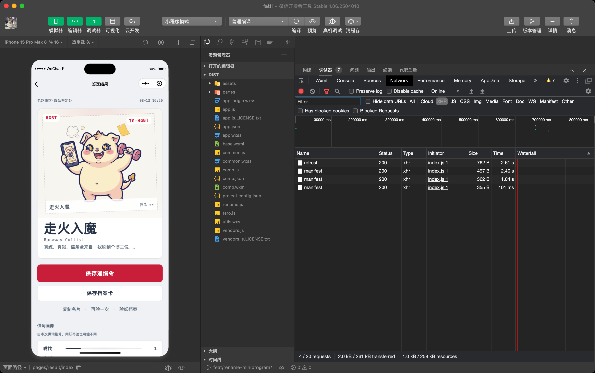
看到人格结果出来的那一刻，你会特别有成就感：这一整个从内容到代码的系统，第一次完整运转起来了。
7.3 本地存储：成绩留在用户手机里
用户测出人格了，然后呢？如果关掉小程序再打开，结果就没了，用户会觉得这个产品很「飘」。我们要把结果存下来。
存哪里？纯前端方案的答案只有一个：微信的本地存储（Storage）。它就像手机里一个专属的小储物柜，你的小程序可以往里写东西，下次打开还在。第 1 章我们提过，这是纯前端「不需要服务器」能成立的根基之一。
在代码里，写和读很简单。写（保存结果）：
Taro.setStorageSync('fatti:result', 结果数据)读（下次打开读出来）：
const result = Taro.getStorageSync('fatti:result')注意键名：我们约定统一加 fatti: 前缀（这代表「属于 FatTI 的数据」）。你自己做的小程序，可以用你自己的前缀，比如 myminapp:。带前缀的好处是避免和别的数据冲突，将来想清理也容易。
除了保存最新结果，我们还可以维护一个「历史列表」：每次测完，把结果追加到一个历史数组里。这样用户能回看「我测过几次，分别是什么人格」。历史记录页展示这个数组。
历史列表页面，展示每次的测试结果：
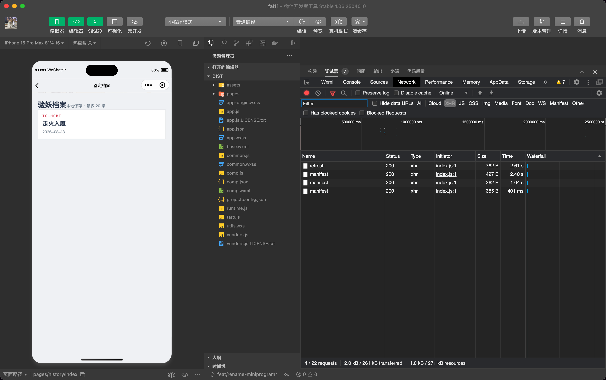
给 Cursor 的提示词参考：
请实现历史记录功能：每次测试完成后，把结果对象存入本地 Storage，键名 fatti:history，是一个数组，最新的在最前面。新增一个 history 页面展示历史列表，每条显示人格称号、测试时间和对应插画。历史为空时显示空态提示。7.4 在模拟器里跑通整条链路
最后一步，完整验收。在模拟器里，从头到尾走一遍：
- 打开小程序，看到首页
- 点「开始测试」，进入答题页
- 答完 12 道题，进入结果页，看到人格称号、插画、描述
- 回首页，再测一次，进历史页，看到两条历史记录
- 冷启动验证：把模拟器「清缓存/重启」，再打开，历史记录还在（证明存储生效）
有任何一步不对，就停下来：把报错信息贴给 Cursor，修完再走。这里建议每修一个 bug，就 git commit 一次（还记得第 2 章装的 Git 吗？），这样每个节点都有存档，改坏了能回退。
跑通以后，再推一次代码到 GitHub。到这里，你有了一个能让用户从头玩到尾的完整产品雏形了。而且记住：整个过程零服务器、零域名、零花费。
自查清单
- 三个页面（首页、答题页、结果页）都在
app.config.ts登记了 - 首页到答题页、答题页到结果页的跳转都通了
- 计分逻辑验证过：至少用一组固定答案推算出期望结果并和运行结果对照
- 结果页能正确显示人格称号、插画、描述
- 结果和记录存入了本地 Storage，键名带
fatti:（或你的）前缀 - 冷启动后历史记录还在
- 每一步修改都 git commit 了，代码推到了 GitHub
本章小结
- 路由是页面的地址，新增页面必须到
app.config.ts登记 - 计分逻辑 = 统计每个维度两端票数，偏向多的确定极端，4 维组合成人格代码
- 行为性代码（计分）必须验证：自己先心算期望结果，再和运行结果对照
- 本地 Storage 是纯前端的「储物柜」，键名统一带前缀
- 主链路跑通后，产品从「壳」变成了「能从头玩到尾的完整雏形」
产品能玩了，但还不够好看。第 8 章，我们来给它化妆。
视觉：插画与 UI
让小程序从「能用」变「好看」。重点是理解：为什么视觉决定传播、插画从哪来、设计 tokens 怎么统一、以及一个绕不过去的硬约束：包体积。
8.0 先聊两句
第 7 章结束时，你的小程序「能用」了。但「能用」和「想分享」，中间隔着很远的距离。
想想你平时在朋友圈看到的小程序分享：什么样的你会点开？往往不是「信息最全」的，而是「看起来有意思、有质感」的。视觉，是病毒式传播的前提。一个结果页，插画好看、配色舒服、名字有梗，用户才有动力截图发出去；如果丑，再准的测试也没人分享。
这一章我们不追求让你变成设计师，而是给你一套「普通人也能做出专业感」的方法。三个关键词：插画（内容的美术化）、设计 tokens（统一的视觉语言）、包体积门禁（微信的硬约束）。
8.1 为什么视觉重要
先建立一个认知：对内容型小程序来说，视觉就是产品的一部分。 用户记住你的产品，往往不是记住功能，而是记住「那个粉粉嫩嫩的测性格小程序」「那个画着可爱妖兽的减脂测试」。
FatTI 在真实开发里就吃过视觉的亏。最早的一版 UI，风格接近「纸质档案、复古打字机」，用户反馈「太直男，不适合女性用户」。后来整个控卡链路推倒重做，换成了「暖萌妖兽卡司」，加了米白、阳光黄、腮红粉的配色，女性用户的接受度立刻上来了。这件事告诉我们：视觉不是锦上添花，而是决定用户愿不愿意停留和分享的核心变量。
对我们小白来说，还有一个现实理由：AI 生成的默认样式千篇一律。 你不做任何视觉决策，AI 就会给你「最稳妥但最无趣」的蓝色渐变、圆角卡片、居中大标题，也就是所谓的「AI 味」。第 4 章 skill 清单里有个 kill-ai-slop（去 AI 味），就是专门用来对付这个的。
8.2 插画从哪来：AI 生图和自建流水线
插画是测试结果页的「脸面」。16 个人格，就要 16 张不同角色的插画。对没有设计师的小白来说，这些图从哪来？
方法一：用现成 AI 生图工具。 用 AI 绘画工具，输入文字描述生成图片。优点是快，缺点是风格不稳定：今天生成的妖兽脸和明天的对不上，而且容易生成「通用 AI 模板脸」。
方法二：自建一条插画流水线（FatTI 的真实做法）。 我们写了一套生图脚本，把「人物插画」的关键参数固定下来：统一的角色形象、统一的风格词、统一的画幅和底色，然后批量生成 16 只妖兽。生成后，每张图都经过压缩，放进小程序的 assets/illustrations/ 目录。
你的项目文件夹里，插画资产长这样：
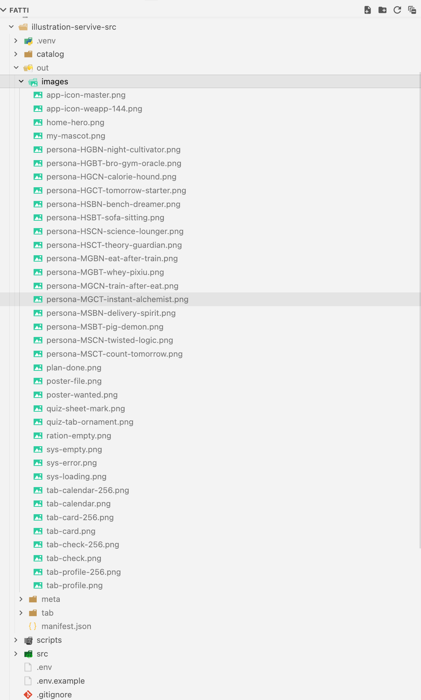
不管用哪种方法，有几条实用规则：
- 风格要一致。 16 张图必须是同一套画风，否则结果页像拼盘。最好的办法是用同一组「风格提示词」生成
- 避免模板脸。 给角色加辨识度的特征（FatTI 的妖兽有各自的「通缉令编号」和造型），不要全是大眼睛尖下巴
- 控制数量。 先保证每个结果页有专属插画，别贪多。单图大小后面会说，有硬指标
插画放进页面后，要在模拟器里看实际效果：插画在页面中的呈现是否协调、有没有被裁掉。
8.3 设计 tokens：颜色、字体、圆角统一
「好看」的秘诀，一半在于统一。专业设计都会维护一套「设计 tokens」：把颜色、字号、圆角、间距全部定义成变量，全站统一引用。好处是：改一个变量，全站跟着变；看起来就是一个「整体」，而不是东拼西凑。
你的样式文件里，可以这样定义（这是 FatTI 真实在用的 tokens.scss 的简化版）：
$lamp: #eef1f4; // 页面底色
$vellum: #f7f5f0; // 米白展示窗底
$cabinet: #243147; // 墨色：正文和描边
$stamp: #c81e3a; // 红：全站唯一主色（按钮、强调）
$carbon: #5c6b7a; // 灰：次级文字
$sheet: #ffffff; // 白卡底
$rule: rgba(36, 49, 71, 0.14); // 细分隔线
$fs-title-2: 34px; // 页面标题
$fs-body-1: 28px; // 正文
$fs-meta: 22px; // 元数据
$radius-card: 20px; // 卡片圆角
$radius-control: 12px; // 按钮圆角设计 tokens 文件长这样，颜色、字号、圆角都是变量：
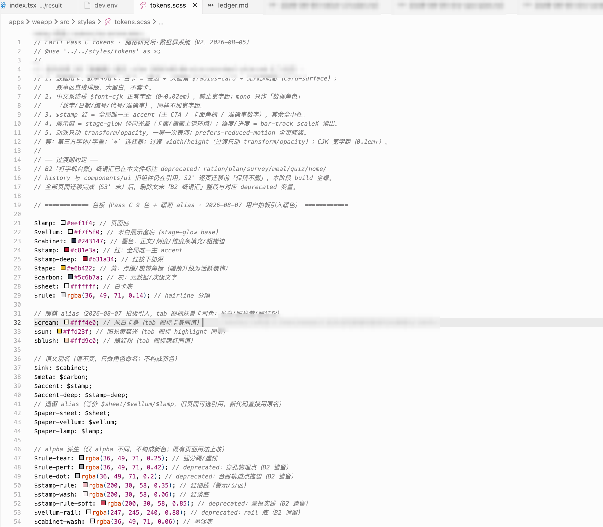
注意这里面有两条重要的设计纪律（FatTI 真实定下的规则）：
- 全站只有一个主色。 红色（印章红）是唯一的主强调色，其余全部用中性色（墨、灰、米白）。这样页面「有一个记忆点」，而不是彩虹
- 圆角分两档。 大卡片 20px，小控件 12px，不要每处乱用。间距也有固定梯度（4/8/12/16/20/24px），不要随手拍脑袋
新手最容易犯的错是「颜色太多、每种颜色都用一点」。克制，是专业感的第一课。如果你拿不准配色，可以用 skill 清单里的 frontend-design（主视觉规划）和 ui-ux-pro-max（设计决策库）来辅助决策。
8.4 主包体积门禁：<1.5MB 是硬约束
微信对小程序的「主包」有严格的体积限制：主包不能超过 1.5MB。 主包就是小程序启动时最先加载的部分。超出会怎样？会无法上传，无法发布。这是硬约束，不是建议。
为什么单独说视觉的图？因为图片是小程序体积的大头。一张未压缩的插画可能几百 KB，16 张就是几 MB，轻松超限。所以必须压缩。FatTI 的做法是定死两条线：
- 单张图片 ≤ 200KB
- 主包总量 < 1.5MB
项目里有一个验证脚本（verify-weapp-dist.mjs），每次打包自动检查这两条线，超了就报错：
FAIL: main package 1.60MB >= 1.5MB这正是「验证回路」的价值：不用肉眼数，机器替你守门。你可以在项目的 package.json 里加一条命令，比如 verify:dist，以后每次打包跑一遍。
压缩图片的工具：可以装一个压缩软件，或者写一个脚本用命令行批量压缩。JPEG 格式对插画（非透明背景）通常比 PNG 小很多。如果某张图特别大，优先检查：是不是尺寸太大（微信显示用不到那么大的分辨率）、是不是用了 PNG（换 JPEG）。
这里特别提醒一个真实踩过的坑：千万不要用「忽略打包」的方式逃避体积限制。 有人会把超大的图加进打包忽略名单，让主包「看起来」不超。但这样图片根本不会进包，用户打开页面图是裂的。正确做法是压缩图片本身，而不是把图藏起来。
到这里，你的小程序已经从「能用」升级成「好看」了。但好看还不够，第 9 章我们来解决传播的最后一公里：让用户愿意把结果晒出去。
自查清单
- 我给每个结果页配了专属插画，且风格统一
- 我用 AI 生图时用了固定的风格提示词，避免模板脸
- 我建立了设计 tokens 文件，颜色、字号、圆角全部是变量
- 我的主色只有一个，圆角分两档，间距有梯度
- 我确认单张图片 ≤ 200KB，主包 < 1.5MB
- 我跑过体积验证脚本，没有试图用「忽略打包」逃避限制
本章小结
- 视觉是传播的前提：用户分享的不是功能，是「好看的结果」
- 插画来源两条路：现成 AI 生图、自建流水线；关键是风格统一、避免模板脸
- 设计 tokens 把颜色、字号、圆角变成统一变量，改一处全站变
- 全站一个主色 + 两档圆角 + 间距梯度 = 专业感
- 主包 < 1.5MB、单图 ≤ 200KB 是硬约束，用验证脚本守门
第 9 章，最后一公里的传播设计。
进阶（可选）：接入 AI 后端
给你的小程序接上「AI 大脑」。如果只想做个纯前端小程序，这一章可以跳过；如果你想做「AI 帮你生成内容」这类功能，这一章带你把后端跑起来。
10.0 先聊两句
先给一个明确的判断标准：你的小程序需不需要后端？
- 如果你的功能都能在前端完成（测试、计分、分享、本地存储），那不需要后端，第 5 到 9 章已经足够了
- 如果你的产品核心是「根据用户输入，动态生成内容」，比如 AI 根据用户档案生成一份专属的控卡单、专属的减肥计划，那你就需要后端
为什么 AI 生成必须走后端？因为调用大模型需要密钥（API Key），密钥放在前端就等于把保险柜密码贴在店门口，任何人打开小程序都能看到、都能偷用。所以密钥必须藏在后端服务器里。FatTI 的 AI 控卡单（根据用户 5 步档案生成当日四餐），就走的是后端。
这一章我们做三件事：认识后端和 FastAPI、理解 LLM 接入与降级设计、了解部署的概念。请记住：这一章的重点是「建立理解」，不是逐行手写代码，很多实现细节我们会留给 Cursor。
10.1 后端是什么：FastAPI 一个「生成控卡单」的接口
第 1 章我们用餐厅打过比方：后端是后厨，用户看不到，但真正干活。在代码世界，后端程序通过「接口」（API）对外提供服务。
接口（API）可以理解成「点菜单上的菜」：小程序告诉后厨「我要一份按这个档案生成的四餐控卡单」，后端做好了，把结果端回来。每个接口都有固定的地址和规矩，比如：
- 地址：
https://api.<你的域名>/v1/plans（示例，<你的域名>换成你自己的） - 方法：POST（意思是我要提交数据，不是只看看）
- 提交内容：用户档案（身体数据、目标、作息等）
- 返回内容：四餐控卡单（每餐菜名、克重、热量）
用什么写后端？FatTI 用的是 FastAPI，一个用 Python 写接口的框架。为什么选它？因为生态成熟、写法简洁、还自带一个自动生成的接口文档页面（/docs），浏览器打开就能看到这个后端有哪些接口、长什么样，调试非常方便。
浏览器访问后端的 /docs 地址，你会看到 FastAPI 自动生成的接口文档页：
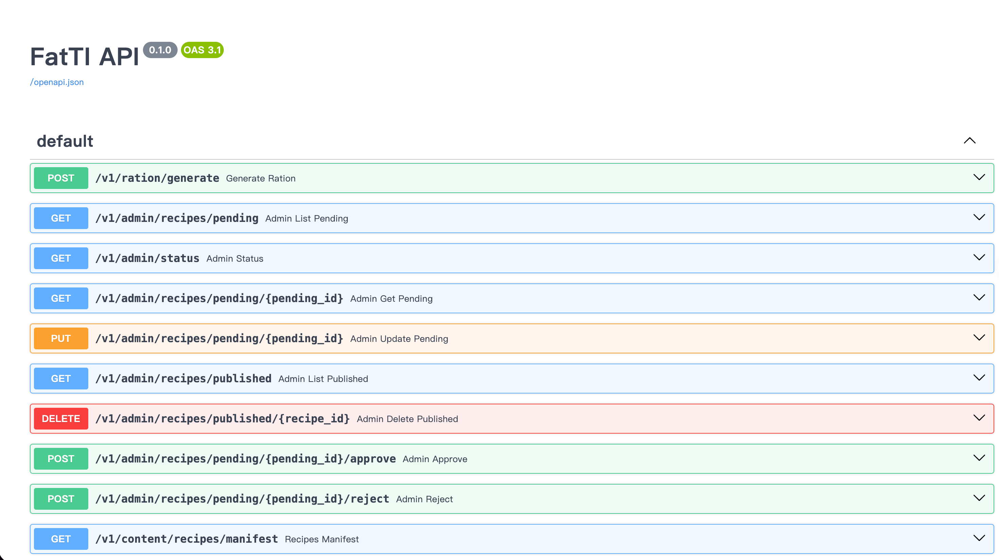
怎么开始写后端？老规矩，让 Cursor 帮你搭。给它这样的提示词：
请用 FastAPI 帮我搭建一个后端项目：
1. 一个健康检查接口 GET /health，返回 {"status": "ok"}
2. 一个生成控卡单接口 POST /v1/plans，接收用户的档案数据（身高体重、目标、作息、常去的店、忌口、厨房工具），返回四餐控卡单（早餐/午餐/晚餐/加餐，每餐含菜名、克重、热量）
3. 项目用 Python，依赖写入 pyproject.toml搭好后，在本地跑起来，用终端验证接口是否活着。FatTI 的做法是给后端加一个健康检查接口，部署后用一条命令验证：
curl https://api.<你的域名>/health如果返回下面这个结果，说明后端已经活着并对外服务了：
终端执行 curl /health，返回 {"status":"ok"}：
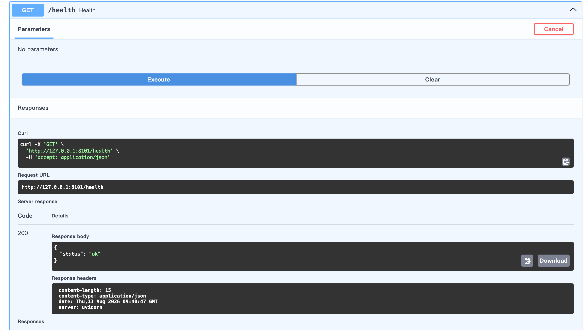
看到 {"status":"ok"} 的那一刻，你的小程序就不再是「孤岛」了，它和你的服务器正式连上了。
10.2 LLM 接入与降级：云端失败时，本地引擎兜底
后端有了，怎么让 AI 真正干活？这就要接入 LLM（大语言模型）了。
接入方式。 用 OpenAI 兼容的接口。DeepSeek 等平台提供的 LLM API 都兼容 OpenAI 的调用格式，这意味着：只要写一份「调用大模型」的代码，换不同的平台只需改一下地址和密钥。代码里，你提供一个系统提示词（告诉 AI 你的产品规则，比如「你是减脂营养师，按用户档案生成四餐，每餐标注热量」），再把用户档案发过去，AI 就生成控卡单返回。
这里再次强调密钥纪律：LLM API 的密钥只存在服务器上，绝不下发到小程序前端。 前端永远只和后端对话，后端的密钥是后端自己的秘密。
降级设计是 FatTI 的核心设计。
想象一个场景：用户填完档案，点了「生成控卡单」，结果后端调用大模型时网络超时了，或者大模型服务挂了。这时候怎么办？如果直接报错，用户体验极差，产品显得不可靠。
我们的答案叫「降级（Degradation）」：后端还内置了一个「本地规则引擎」，它不用大模型，而是用提前准备好的菜谱数据、热量数据，按照固定规则生成一份「保底控卡单」。流程是：
- 先尝试调用大模型
- 调用成功，返回 AI 生成的控卡单
- 调用失败，静默降级到本地引擎，生成保底控卡单
- 小程序端甚至不知道发生了什么，用户体验无缝衔接
这套设计对应了一个大原则：核心流程永远不能被外部依赖卡死。 云端是增强，本地是底线。不管 AI 多智能、多不稳定，你的用户永远能拿到一份可用的结果。
模拟器里，AI 生成的今日四餐控卡单长这样：
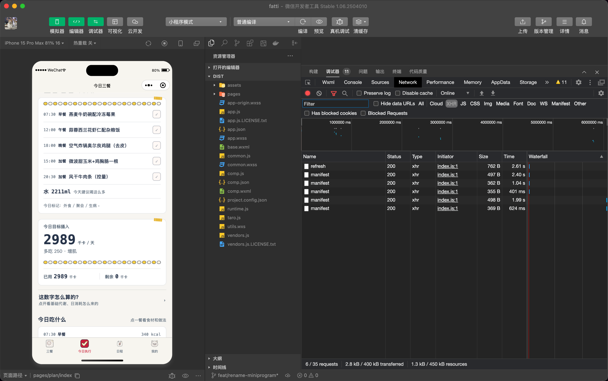
这一节的设计思路，你可以推广到任何 AI 功能上：永远想好「AI 挂了怎么办」，并且真的实现它。
10.3 部署到云服务器：Nginx、systemd（概念级）
后端写好了，本地能跑，但用户用的是你的手机本地模拟器，其他用户用不到。要让所有用户都能访问，必须把后端「部署」到第 3 章买的那台云服务器上。
部署涉及一串名词，我们只讲概念，不逐行教学：
- 把代码传上服务器：用 Git 把后端代码推到 GitHub，然后在服务器上拉取（第 3 章买的服务器、配的 SSH 就用上了）
- Nginx：服务器上的「门卫」。用户的请求先到 Nginx，Nginx 判断「这是网页请求还是接口请求」，接口请求转发给后端的程序。它还负责 HTTPS 加密（第 1 章说的带锁信封）
- systemd：服务器的「进程管家」。它负责保证你的后端程序一直运行：程序崩了自动重启，开机自动拉起
- 数据库（PostgreSQL）：后端程序需要存数据（用户档案、历史控卡单）时，存到数据库里。它是后厨的「仓库」，第 1 章说过
- Cloudflare + HTTPS：第 3 章配的 DNS 此时真正派上用场：域名解析到服务器，HTTPS 证书让微信的合法域名校验通过
完整的请求链路是这样的：
用户手机小程序 → HTTPS 加密请求 → Cloudflare（DNS 查号 + 加速）→ 服务器 Nginx（门卫）→ FastAPI（后厨）→ LLM API / 本地引擎 → 返回结果 → 原路返回小程序部署完成后，用第 10.1 的 curl /health 验证一次，然后回到第 3.6 节，把 https://api.<你的域名> 填进微信公众平台的 request 合法域名。这一步做完，你的小程序才能正式调用自己的后端（开发调试时，微信开发者工具可以勾选「不校验合法域名」，方便本地联调，但正式上线必须配好）。
到这里，你的小程序拥有了完整的「前端 + 后端 + AI」能力。第 11 章，我们把它交给微信审核，正式上线。
自查清单
- 我判断清楚了：我的产品需不需要后端（AI 生成内容才需要）
- 我理解了接口（API）是后厨的点菜单，FastAPI 是写接口的框架
- 我的后端有健康检查接口，
curl /health返回{"status":"ok"} - 我理解了 LLM 接入的方式：OpenAI 兼容接口 + 密钥只放服务器
- 我实现了降级：大模型失败时，本地引擎兜底，用户无感
- 我知道部署链路：Git → 服务器 → Nginx → systemd → 数据库 → HTTPS
- 我在微信公众平台配置了 request 合法域名
本章小结
- 需要后端的判断标准：产品核心是否是「AI 动态生成内容」
- FastAPI 是 Python 写接口的框架，自带
/docs接口文档 - LLM 接入用 OpenAI 兼容接口，密钥只存服务器，绝不下发前端
- 降级设计是核心：云端失败，本地引擎兜底，核心流程永不被卡死
- 部署链路概念：Cloudflare → Nginx → FastAPI → 数据库，最后配好合法域名
后端就位，产品完整了。第 11 章，提审上线。
上线：提审与发布
把你的小程序交给微信审核，正式发布上线。这一章之后，你的小程序就不再只是「电脑里的项目」，而是「人人可扫的正式产品」。
11.0 先聊两句
终于到了这一天。经过前面十章，你的小程序已经：能玩（第 5 到 7 章）、好看（第 8 章）、能传播（第 9 章）、能 AI（第 10 章，如果你做了）。现在把它从「开发者工具」里，送到「微信线上」。
这个过程分三步：提审前自查 → 提交审核 → 发布上线。另外还要学会一个重要技能：用「体验版」让朋友先帮你测，别让 bug 直接上到线上。
11.1 提审前自查：别让审核打回
微信对每个上线的小程序都会人工审核。被打回是正常的，但很多打回其实是可以提前避免的。提交前，对照这份自查清单过一遍：
第一，隐私自查。
- 所有用户输入和生成的数据，只在本地存储吗？如果上了云端，隐私政策里要写清楚，微信审核很看重这一点
- 有没有收集用户手机号、位置等敏感信息？没有就不用申请对应权限
- 个人主体不能开通支付，检查你的小程序里没有收款功能
第二，类目自查。
- 小程序的功能要对得上你注册时选的类目。测试类小程序通常归「工具」或相关类目
- 如果涉及「医疗、健康」类内容（比如减脂建议），注意措辞：加上「仅供参考，不作为医疗建议」之类的免责声明，这是审核的敏感区
第三，包体积自查。
- 主包 < 1.5MB（第 8 章的验证脚本跑一遍，绿色再提交）
- 单张图片 ≤ 200KB
第四，基础质量自查。
- 版本号要填对：正式提审建议用 1.0.0 之类有意义的版本号
- 每个页面的标题、空态、按钮文字都检查一遍，别出现「测试中」「待完善」这类半成品文案
- 没有调试用的报错提示暴露给用户（比如把
console.log的报错直接显示在页面上） - 真机上完整走一遍核心链路（第 7 章的 4 步走查），确认没有崩溃
第五，文案自查。
- 全站文案不要出现敏感词、夸张医疗承诺（「根治」「百分百有效」这类）
- 隐私相关的说明写清楚，在哪里收集了什么数据，怎么删除
做完自查，你会对自己产品的「上线成熟度」有一个真实的判断。宁可自查多花一天，也不要被打回耽误一周。
11.2 提交审核 → 审核通过 → 发布
自查通过后，开始正式提审。
第一步：上传代码。 在微信开发者工具里，点右上角的「上传」按钮。上传需要填两个东西：版本号（比如 1.0.0）和项目备注（给审核员看的说明，写清楚你的小程序是干什么的、怎么用）。上传后，代码进入微信公众平台后台。
微信开发者工具点「上传」，会弹出版本号填写弹窗：
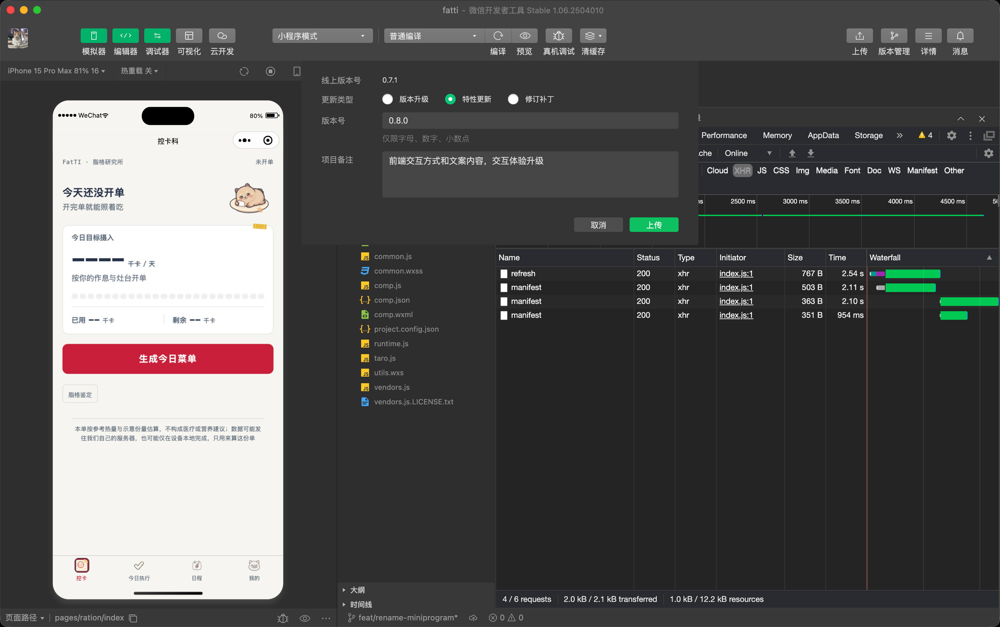
注意：图里这里的版本号弹窗，其实在提审和上传体验版时都会出现。别着急，我们 11.3 会先讲体验版，这里先记住「上传 = 把代码送到微信后台」。
第二步：提交审核。 登录微信公众平台后台 → 「版本管理」→ 找到刚上传的版本 → 点「提交审核」。提交时要填写：审核内容说明（页面截图、功能介绍）、有没有使用测试账号等。个人主体的审核速度通常比企业主体快，具体以实际为准。
第三步：等待审核结果。 审核一般几个工作日。期间你可以通过后台的「审核进度」查看状态。如果被打回，后台会写明原因，按原因修改后重新提交即可。被打回不丢人，迭代修改是常态。
第四步：发布。 审核通过后，后台会显示「审核通过，可发布」。点「发布」按钮，你的小程序就正式上线了：任何人搜索你的小程序名，或者扫你的小程序码，都能进入。
微信公众平台「版本管理」页，能看到体验版、审核中、线上版本的状态列表：
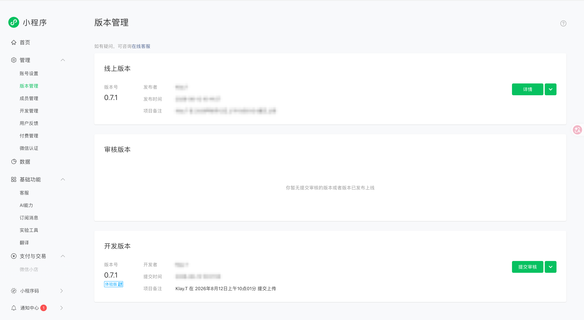
发布成功的那一刻，建议你截图纪念一下。三周前你还在问「小程序怎么做」，现在你的产品已经全世界可见了。
11.3 上传体验版：让朋友先帮你测
在正式提交审核之前，强烈建议先发「体验版」：这是给特定微信号（体验成员）测试用的版本，不会公开给所有人。
流程：
- 微信开发者工具点「上传」，填版本号，注意这一步上传的版本默认会出现在后台
- 后台「版本管理」里找到这个版本，点「选为体验版」
- 在「成员管理」里添加体验成员（朋友们的微信号），他们就能在微信里通过「小程序搜索 → 开发版/体验版」或你发的体验版二维码，打开这个版本
体验版的价值：让真实用户、真实手机、真实网络环境帮你测。重点看三样：
- 真机表现：模拟器永远和真机有差异，海报能不能保存、图片加载快不快，必须以真机为准
- 真实链路：朋友从分享卡片点进来的路径对不对
- 情绪反馈：朋友测完有没有想分享的冲动，这个模拟器测不出来
把「让至少三个朋友真机测一遍」定为上线前的硬门槛。收集他们的意见，改完再提审。这一步省下来的，是上线后被用户发现 bug 的尴尬。
到这里，你的小程序正式上线了。上线之后还有两件事：持续迭代、配个官网。第 12 章，我们聊聊怎么持续迭代，以及给产品配一个官网。
自查清单
- 我对照 11.1 的五项自查逐条过了一遍（隐私、类目、体积、质量、文案）
- 我的主包 < 1.5MB，验证脚本跑过是绿色
- 我上传了代码，填了版本号和备注
- 我发了体验版，至少三个朋友在真机上测过，反馈已收集
- 我提交了审核，知道被打回后怎么处理
- 审核通过后，我点了「发布」，小程序正式上线
本章小结
- 提审前五项自查：隐私、类目、体积、质量、文案，宁可自查多一天，不被打回耗一周
- 上传 = 把代码送到微信后台；提审 = 交给微信审核；发布 = 正式上线
- 个人主体不能支付，涉及健康类内容要加免责声明
- 体验版是上线前的安全网：让至少三个朋友真机测，测完再提审
- 被打回是常态，按原因修改重提即可，不丢人
上线了！第 12 章，最后一课：持续迭代与给你的产品安一个官网。
持续迭代与你的官网
上线之后怎么办。这一章教你三件事：用「更新记录」驱动产品迭代、给产品做一个官网、以及怎么运营推广。做完这章，你的产品就有了「自我进化」的能力。
12.0 先聊两句
上线第一天大概率没流量，这一章讲怎么让它活下去。
一个残酷的事实：上线第一天，大概率没有流量。你的小程序躺在微信的汪洋大海里，等待被人发现。这一章我们不灌鸡汤，给三件实操的事：怎么让产品自己「长」（迭代机制）、怎么让人找到你（官网）、怎么让人愿意来（运营）。
FatTI 的真实节奏可以给你参考：从 2026 年 7 月 20 日起步，到 8 月 12 日发布正式版，大约三周。这期间几乎每天都有「迭代记录」，上线之后也一直在持续更新。它的秘密不在于「一次做对」，而在于「循环很快」：改一点、验一点、发一点。
12.1 用「更新记录」驱动迭代
产品迭代最常见的问题不是「没想法」，而是「没记录」。改着改着，忘了当初为什么这么改；测着测着，忘了哪个功能试过哪个方向失败了。没有记录的迭代，是原地打转。
FatTI 的做法是建立一套「更新记录」体系，两层：
第一层：账本（Ledger）。 一份「当前产品状态」的实时快照：现在做到哪一步了、下一步做什么、有哪些待办和坑。每次开发结束，都要更新它。它的作用像游戏里的「存档点」：任何时候打开账本，你都知道自己在哪里。
第二层：日志（Journal）。 每天（或每个任务）写一篇简短的开发日志：今天做了什么、验证了什么、踩了什么坑、结论是什么。它的作用像「探险笔记」：事后回顾时，你能看到整个产品是怎么一步步长出来的。
对小白来说，这两层可以很简单。你的账本可以是手机备忘录里的一段话，你的日志可以是一个 Markdown 文件。核心原则只有一个：每次改动，都要有记录。 记录内容四要素：
- 做了什么（改了什么功能/数据/样式）
- 为什么做（背景和判断）
- 怎么验证（跑过什么检查、真机测过什么）
- 下一步（接下来要做什么）
有了这套记录，你会发现两个好处：一是你的 AI（Cursor）也看得到这些记录，它能基于历史做出更连贯的建议；二是你自己回头看，能清楚地看到「什么决策是对的，什么走偏了」，这就是迭代的底气。
12.2 给产品做一个官网：GitHub Pages + 自定义域名
小程序上线了，但很多用户的第一触点其实是「搜索」。当有人在搜索引擎或朋友圈看到你的产品名，他们可能想先看看「这是什么」。这时候，一个官网就是你的门面。
对小白最友好的官网方案：GitHub Pages + 自定义域名。 免费、不需要服务器、改完代码推送就更新。这个官网不需要很复杂，一个单页就够：产品是什么、怎么用、截图展示、小程序码。
怎么做？
- 建仓库：在 GitHub 上建一个专门放官网的仓库（比如叫
<你的GitHub用户名>.github.io，这是 GitHub Pages 的特殊命名，直接能用这个名字访问） - 写页面：用纯 HTML + CSS 写一个单页，或者让 Cursor 帮你写。设计风格可以参考你小程序的视觉（颜色、字体统一），这样官网和小程序看起来是一家人
- 开启 Pages：仓库设置里找到 Pages，选择部署来源为 main 分支，保存后稍等，官网就上线了，地址是
https://<你的GitHub用户名>.github.io - 绑自定义域名：如果你有第 3 章买的域名，可以在 Pages 设置里填上域名，然后回域名服务商加一条 CNAME 记录，把域名指到
https://<你的GitHub用户名>.github.io
你的官网首页（本教程所在的站）大概长这样：
这里有个真实的坑要提前告诉你：GitHub Pages 有时候不会自动触发重新构建。 你推了代码，但官网还是旧版。解法是去 Pages 设置里强制重建一次（删除 Pages 配置再重新开启，或者用 GitHub 提供的 API 触发构建）。上线后务必用浏览器实际访问验证，别只看代码。
官网上要放什么？最少四样：一句话产品介绍、两三张小程序截图、小程序码（扫码直达）、更新记录。后面两样尤其重要：截图让人想试，更新记录让人信服「这产品活着」。
12.3 增长与运营：让用户找到你
官网有了，产品上线了，但没人来怎么办？运营这件事，对个人开发者来说，核心就一句话：去你的目标用户聚集的地方，把产品讲给他们听。
FatTI 的真实运营动作可以给你参考，都是个人能做的：
- 内容平台发帖：在目标人群聚集的平台（比如小红书、论坛）发「产品背后的故事」。注意别硬广，要讲「痛点 + 解法 + 一点真实经历」。FatTI 发过「拆解爆帖配方、复刻成自己的产品介绍」这类帖子
- 用现成素材做内容：产品本身就能生产内容。16 个人格、16 只妖兽的档案和插画，本身就是一篇篇小红书笔记的素材
- 搜一搜关键词：在小程序后台可以配置「搜一搜」关键词，用户搜「减脂测试」这类词时有机会找到你的小程序
- 保活动作：让老用户愿意回来。FatTI 的做法是订阅消息提醒（午餐前提醒、备菜提醒），用系统能力把用户「拉」回来，而不是全靠缘分
关于「要不要花钱买量」：作为个人开发者，前期不要。把预算省下来，先把「用户愿意分享」这件事做扎实。当分享率真的起来了，增长就是免费的。
到这里，整本教程的十二章全部结束了。我们从「小程序是什么」讲到了「怎么运营一个上线的小程序」。你的收获不只是一个小程序，更是一整套「用 AI 从 0 到 1 做产品」的方法：先扫盲、再准备、后实操、先纯前端跑通、再进阶后端、上线、迭代、运营。
别忘了我们一直在说的：AI 负责快速产出，你负责提需求和验证。三周前你连 Node.js 是什么都不知道，现在你已经有一个能上线、能分享、能自我进化的产品了。剩下的路，靠「更新记录」一步步走。别忘了有空翻翻附录 A 的踩坑宝典，那都是别人替你踩过的坑。
自查清单
- 我建立了自己的更新记录：一个账本（当前状态）+ 一份日志（每天记录）
- 每次改动我都能回答四要素：做了什么、为什么、怎么验证、下一步
- 我用 GitHub Pages + 自定义域名上线了官网
- 官网有：一句话介绍、截图、小程序码、更新记录
- 我验证过官网真的能访问，不只看代码
- 我列出了一个运营动作清单（内容平台、搜一搜关键词、保活）
本章小结
- 上线是起点不是终点：改一点、验一点、发一点的快循环才是王道
- 更新记录两层：账本（现状快照）+ 日志（每日记录），四要素固定
- 官网用 GitHub Pages 免费做，记得绑域名后实测访问，别被不自动重建坑
- 运营的本质是去目标用户聚集的地方，把产品讲给他们听
- 前期不花钱买量，先把「用户愿意分享」做扎实
恭喜你完成全部十二个章节。这本教程还没结束，后面还有三份附录：踩坑宝典、预算明细、术语表。强烈建议收藏附录 A，那是三周真实开发里踩出来的血泪。
附录 A · 踩坑宝典
本附录收录 FatTI 真实开发三周里踩过的坑，每条按「现象 → 原因 → 解法」整理。这些都是别人替你交过的学费，建议随看随用，遇到问题先来翻一翻。
坑 01：密钥被脚本日志悄悄泄露
现象：某个自动化脚本运行后，日志文件里出现了密钥的明文。一开始没人发现，因为日志看起来只是「正常输出」。
原因：脚本里用了一段类似 KEY=$(awk -F= '/^SECRET=/{print $2}' 配置文件) 的写法，把密钥读进了 shell 变量。而脚本开了 set -ex（打印每一条执行的命令），所以整行赋值命令（含密钥明文）被回显进了日志。
解法：
- 自动化脚本里禁止把密钥读进 shell 变量，尤其是开了
set -x的脚本 - 检查密钥是否配置，只输出布尔结果：
[ -n "$(grep -c '^KEY=.' 文件)" ] && echo yes，绝不打印变量本身 - 如果发现密钥已经泄露，视为已泄露，立即去平台重置
教训：密钥这种值，永远不要出现在「会被打印出来」的代码路径里。
坑 02：小程序主包超限，图还「消失」了
现象：打包时报主包超过 1.5MB；有人为了「过审」，把图片加进了打包忽略名单，结果页面上图片全裂。
原因：微信对主包有 1.5MB 硬限制。图片是小程序体积的大头，不压缩必然超限。而「忽略打包」只是让体积「看起来」小了，图根本没进包，用户打开自然是裂图。
解法：
- 主包 < 1.5MB、单图 ≤ 200KB，写一个验证脚本在打包后自动检查（
verify-weapp-dist.mjs这类） - 图片用 JPEG（无透明背景时），压缩到合适分辨率
- 禁止用「忽略打包」逃避体积限制，图必须真的进包
教训：机器验证比肉眼可靠。别用「看起来没问题」骗自己。
坑 03：误把 assets 目录写进打包忽略名单
现象：上传的包里，dist/assets/illustrations/ 下的插画全部消失，页面插画一片空白。
原因：打包忽略配置里写了 packOptions.ignore 排除 assets。但忽略路径是相对于 dist/ 的，这个写法把 dist/assets/（含插画）整个误杀了。
解法：
- 忽略配置只排除真正不该进包的东西（生图服务目录、虚拟环境等），路径要精确到具体目录
- 禁止写裸的
assets，会误伤dist/assets - 打包后进
dist/抽查关键资源是否存在
教训：忽略配置是「宁可漏，不可误杀」。加一条规则前先想想它会不会误伤别的。
坑 04：类型检查把不该扫的目录扫进来了
现象：tsc（TypeScript 类型检查）报出一堆来自 config/ 目录或未安装平台的 Taro 类型的错误，明明代码没写错。
原因：TypeScript 检查的范围（include）没有限制，把 config/ 和未安装平台的类型文件也扫了进来。
解法：
tsconfig.json设skipLibCheck: trueinclude只写src和types，exclude排除config、node_modules、dist
教训：工具的检查范围要主动约束，别让无关文件污染你的检查结果。
坑 05：删了页面，模拟器还报「页面不存在」
现象：删除了一个页面文件，重新编译后模拟器仍然试图加载它，报错页面不存在。
原因：Taro 的 watch 模式缓存了旧的页面信息，dist 和编译缓存（.swc、node_modules/.cache）里的旧残留没有被清掉。
解法：
- 删除页面时，连同
src/pages/<名字>/空目录一起删 - 清掉
dist、.swc、node_modules/.cache再重新编译 - 重新编译后确认页面列表里没有旧页面
教训：编译缓存有时候比代码更顽固。遇到「删了还在」，先清缓存。
坑 06：WXSS 里写了 * 选择器，编译报错
现象：在全局样式里写了 * { margin: 0; } 这种通用选择器，微信编译直接报 unexpected token *。
原因：微信小程序的样式语言（WXSS）不支持 CSS 里的通用选择器 *。
解法：
- 全局样式不要用
*，改成显式命名的 class（如.page、.card） - 想减少动效或统一边距，写到具名的 class 上
教训：小程序有自己的一套「方言」，不是所有 CSS 特性都支持。
坑 07：海报生成「静默失败」，图是空的
现象：海报生成代码没报错，但生成出来的图片内容全是空白；检查代码逻辑也找不出问题。
原因：海报要画的小程序码、背景图等静态资源，放错了位置，没有被打包进 dist。createImage 加载不到图，失败却不抛错，于是「静默失败」。
解法：
- 静态资源要放进能被打包进小程序的目录（如
src/assets/illustrations/） - 打包后确认
dist/里真的有这个资源 - 海报生成后一定要在模拟器和真机上各看一次
教训：小程序里很多失败是「静默」的，不报错不代表成功。资源类问题，先确认资源真的进了包。
坑 08：海报里人格图被裁掉头顶和脚
现象：海报里的人格插画用的是「封面填充」模式，结果竖构图的人物被裁掉了头顶或脚。
原因：图片适配用了 cover（填充裁剪）模式。插画是竖构图，放进海报的横向区域时，cover 会裁掉上下部分。
解法：
- 海报/结果页的人格插画用 contain（完整容纳）模式，保证整张图完整可见
- 容器背景用纯色或材质，不要依赖被裁掉的部分
教训：图片适配模式（cover vs contain）取决于内容。人物插画优先 contain，风景图才考虑 cover。
坑 09：海报整页盖了白色半透明膜，闷得慌
现象：海报为了「可读性」，整张图盖了一层白色半透明膜，结果底图材质全糊了，海报看着又闷又平。
原因：白膜确实提高了文字可读性，但代价是杀死了底图的质感和层次。
解法：
- 可读性只靠顶、底两段「护膜」半透明条承载文字
- 底图材质必须透出来
- 二维码单独垫白底，脚注文字限宽放在二维码左侧，不压图
教训：遮罩是用来「帮助阅读」的，不是用来「盖住画面」的。能局部就别整页。
坑 10：答题题干「悬空」，用户没有代入感
现象：某道题写的是「你此刻想吃什么？」，被评审直接打回：没有时间、地点、场景，用户根本带入不了。
原因：题干只写了「你 + 此刻」，缺乏具体情境。这种悬空写法是内容设计的大忌。
解法：
- 题干首句必须自带情境（时间/地点/梗），比如「凌晨十二点朋友发来烧烤图，你咋回」
- 一个情境配一个问句，禁止把两个无关的梗硬拼成一句
教训：内容质量靠「具体」撑起来。没有情境的题目，等于没有灵魂。
坑 11：SVG 转 PNG，图只占了左上角一小块
现象：用 macOS 的 qlmanage 把 SVG 渲染成 PNG，结果内容全部挤在左上角，或者整体偏移。
原因：SVG 的 width/height 声明成了设计坐标（如 64），而渲染器按声明尺寸渲染，导致内容和画布尺寸不匹配。
解法：
- SVG 的
width/height写成目标渲染尺寸（如 512） viewBox保持设计坐标（如0 0 64 64）- 渲染后务必用看图工具肉眼检查，别只看命令「成功了」
教训：SVG 里有两套坐标（声明尺寸和 viewBox），搞混了图就会偏移。工具输出的「成功」不等于「正确」。
坑 12：GitHub Pages 推了代码，官网还是旧的
现象：往 GitHub Pages 仓库推送了新代码，等了几小时官网还是旧版，Actions 也没有新的构建记录。
原因：GitHub Pages 对后续推送可能不自动触发新构建。这是 GitHub 侧的真实行为，不是代码问题。
解法：
- 强制重建：在 Pages 设置里删除 Pages 配置，再重新开启（删除 → 重新启用），即可强制触发构建
- 部署后务必用浏览器实际访问验证，有条件的话用 curl 检查静态资源是否 200
教训：部署工具的「应该会自动」往往不可靠。上线验证要以「实际访问结果」为准，而不是「我以为」。
坑 13：测试桩写成类，被测代码死活不调用
现象：写测试时，为了让被测代码使用假数据，定义了一个「看起来能拦截请求」的桩，结果一跑就报 TypeError，桩根本没被调用。
原因：被测代码是通过「类实例化」的方式创建请求客户端的，而测试桩写成了「带实例方法 __call__ 的类」。实例化类和调用 __call__ 是两回事，桩永远不会被触发。
解法：
- 这类测试桩必须是工厂函数（或
__new__），让实例化动作直接返回桩实例 - 桩内部的「顺序响应列表」要共享同一个引用，别复制成新列表，否则每次实例化都从头重放
- 写完测试先跑一遍，确认桩真的被触发了，再往下写
教训：测试桩是「模拟某段代码的行为」，必须和被模拟代码的真实调用方式一致。写完桩先验证它真的生效，不要想当然。
---
这 13 个坑，覆盖了三周开发里最典型的问题：安全（坑 01）、构建（坑 02 到 05）、样式（坑 06）、资源（坑 07 到 09）、内容（坑 10）、工具链（坑 11 到 13）。它们有一个共同的底层逻辑：永远验证，别相信「应该没问题」。 这也是整本教程最想教给你的一件事。
附录 B · 预算明细表
本附录把做一个小程序从零到上线的成本拆开算给你看。所有价格为市场公开价区间，会随平台政策和促销活动变化，以你实际购买时为准。
B.1 一次性 vs 月付
先分清楚两类花费：
- 一次性：装一次、用很久，如 Cursor（按订阅算其实是月付，但可随时停）、域名、微信认证
- 月付：按月持续扣费，如云服务器、LLM API 按量
B.2 分项预算
| 项目 | 类型 | 说明 | 价格区间 | 备注 |
|---|---|---|---|---|
| Cursor | 订阅 | AI 编程工具 | 免费版 0 元；Pro 约 20 美元/月 | 教程用免费版即可起步 |
| LLM API | 按量 | DeepSeek 等（OpenAI 兼容） | 轻度使用几元到几十元/月 | 可选，第 2 章和第 10 章用到 |
| 微信小程序 | 一次性 | 个人主体注册 | 注册免费（个人认证约 30 元/年，可选） | 注册免费 |
| 域名 | 一次性 | .com/.top/.xyz 等 | 约 20 到 100 元/年 | 海外注册商购买，免国内备案/实名 |
| 云服务器 | 月付 | 轻量 2C2G 起步 | 约 50 到 150 元/月（新用户有优惠） | 第 3 章和第 10 章用到 |
| Cloudflare | 免费 | DNS + CDN | 0 元 | 免费 |
| GitHub | 免费 | 代码托管 | 0 元 | 免费 |
B.3 三个方案对比
方案一：纯前端（第 5 到 9 章）
- 0 元/月
- 不需要服务器、域名、后端
- 小程序注册免费，代码托管免费，AI 工具用免费版
- 结论：一分钱不花就能做出可上线的小程序
方案二：入门上线（方案一 + 域名 + 服务器）
- 首年合计约 500 到 1000 元
- 域名约 20 到 100 元/年
- 服务器约 50 到 150 元/月，年付通常有优惠
- 结论：最省的上线方案，支持接入简单后端
方案三：完整 AI 产品（方案二 + LLM API）
- 在方案二基础上，每月增加几元到几十元的 API 消耗
- 支持 AI 动态生成内容（控卡单、计划等）
- 结论：千元内拿下「带 AI」的小程序
B.4 省钱提示
- 先零后一：先做纯前端（0 元），确定产品有人要，再花钱加服务器和域名
- 等新用户优惠：云服务器新用户常有首年大额折扣，注册前先查活动
- 域名货比三家：不同后缀价格差很多，
.top/.xyz等常见后缀很便宜 - 免费额度用足：Cursor 免费版、Cloudflare 免费计划、GitHub 免费版，能覆盖 90% 的需求
- 别囤：服务器按需付费，月付比年付灵活，产品没人用可以先停掉
B.5 一句话结论
首年千元内可以把带后端、带 AI 的小程序跑起来；如果只做纯前端，一分钱不用花。 成本不是做小程序的门槛，耐心才是。
附录 C · 术语表
本附录按字母和主题整理全书出现的术语，每条给「一句话解释」和「类比」。遇到忘了的词，回来翻这里。
C.1 小程序与微信生态
| 术语 | 一句话解释 | 类比 |
|---|---|---|
| 小程序 | 微信里的轻应用，免下载、点开即用 | 开在微信里的小档口 |
| AppID | 小程序的唯一身份证号，格式像 wx1234567890abcdef（示例） | 营业执照编号 |
| AppSecret | 调用微信接口用的密钥，保密级别最高 | 保险柜密码 |
| 体验版 | 给指定体验成员测试的版本，不公开 | 内部试吃 |
| 正式版 | 通过审核后公开上线的版本 | 正式开张 |
| request 合法域名 | 小程序只能请求已登记域名的微信安全机制 | 小区物业登记 |
| 模拟器 | 微信开发者工具里模拟手机环境的窗口 | 试衣镜 |
| 本地存储（Storage） | 小程序写在用户手机里的数据 | 专属储物柜 |
C.2 前端与编程基础
| 术语 | 一句话解释 | 类比 |
|---|---|---|
| 前端 | 用户看到的界面和交互 | 餐厅大堂 |
| 后端 | 用户看不到的处理逻辑 | 餐厅后厨 |
| 服务器 | 24 小时开机的电脑，跑后端程序 | 餐厅楼房 |
| 数据库 | 存数据的软件，用户数据放这里 | 仓库 |
| 代码 | 写给计算机执行的指令文本 | 菜谱 |
| 终端（Terminal） | 输入命令和电脑对话的窗口 | 对讲机 |
| 命令行 | 在终端里输入的文本指令 | 念咒语 |
| 框架 | 别人写好的代码骨架，你往上添功能 | 预制房框架 |
| 组件 | 可复用的界面零件（按钮、卡片） | 乐高积木 |
| 路由 | 页面间的跳转路径和地址 | 地图和路口 |
| 脚手架 | 自动生成项目基础结构的工具 | 预制框架 |
| JSON | 轻量数据交换格式，人和程序都能读 | 填好的表格 |
| TypeScript | 带类型检查的 JavaScript 增强版 | 有质检的流水线 |
| Sass | 更好写的 CSS，用来给页面化妆 | 高级化妆品 |
| CSS | 控制页面样式的语言（颜色、布局） | 化妆术 |
| Markdown | 轻量标记语言，写文档用 | 简单排版符号 |
| Canvas | 在页面里画图的画布能力 | 画板 |
| API | 程序之间约定的接口 | 点菜单 |
C.3 网络与部署
| 术语 | 一句话解释 | 类比 |
|---|---|---|
| 域名 | 服务器的名字，人类可读的地址 | 门牌号 |
| DNS | 把域名翻译成 IP 地址的系统 | 查号台 |
| IP 地址 | 服务器在互联网上的数字地址，如 1.2.3.4 | 经纬度 |
| HTTPS | 加密的网络传输协议 | 带锁的信封 |
| 公网 IP | 互联网上唯一可达的服务器地址 | 对外门牌 |
| 端口 | 服务器上区分服务的号码 | 大楼里的房间号 |
| 安全组/防火墙 | 控制哪些端口对外的规则 | 门禁 |
| 部署 | 把代码跑上服务器供用户使用 | 装修好开张 |
| Nginx | 服务器上的网络门卫，转发请求 | 前台接待 |
| systemd | 服务器上的进程管家，保活进程 | 值班保安 |
| CDN | 把内容分发到各地节点加速访问 | 各地分店 |
| Git | 代码版本管理工具 | 游戏存档 |
| 仓库 | 存放一个项目代码的地方 | 档案柜 |
| 推送（push） | 把本地代码传到远端仓库 | 寄快递 |
C.4 AI 相关
| 术语 | 一句话解释 | 类比 |
|---|---|---|
| AI 编程 | 用自然语言指挥 AI 写代码 | 委托同事干活 |
| IDE | 集成开发环境，写代码的软件 | 多功能工作台 |
| Cursor | 本书用的 AI 编程 IDE | 会写代码的同事 |
| LLM | 大语言模型，AI 的「大脑」 | 知识渊博的顾问 |
| LLM API | 程序调用大模型的接口 | 顾问热线 |
| Token | AI 服务的计费单位 | 电话计费字 |
| 提示词（Prompt） | 你给 AI 的指令文字 | 布置任务 |
| Skills | 给 AI 装的工作手册/技能包 | 员工手册 |
| 降级 | 主方案失败时自动用备用方案 | 备胎方案 |
| 密钥（Key） | 调用付费服务的身份凭证 | 保险柜钥匙 |
C.5 内容与产品
| 术语 | 一句话解释 | 类比 |
|---|---|---|
| 维度 | 测试测量的性格坐标轴 | 性格坐标系 |
| 人格 | 维度组合出的角色结果 | 人设档案 |
| 题库 | 测试题目的集合 | 考试题库 |
| 插画 | 给产品配的专属画作 | 门面装修 |
| 设计 tokens | 统一颜色、字号、圆角等视觉变量 | 装修风格手册 |
| 主包 | 小程序启动时最先加载的代码包 | 主楼 |
| 更新记录 | 账本 + 日志，记录产品迭代 | 探险笔记 |
C.6 常用缩写速查
| 缩写 | 全称 | 意思 |
|---|---|---|
| API | Application Programming Interface | 接口 |
| CSS | Cascading Style Sheets | 样式表 |
| DNS | Domain Name System | 域名解析 |
| HTTPS | HyperText Transfer Protocol Secure | 加密网页协议 |
| IDE | Integrated Development Environment | 集成开发环境 |
| JSON | JavaScript Object Notation | 数据格式 |
| LTS | Long Term Support | 长期支持版 |
| UI | User Interface | 用户界面 |
| UX | User Experience | 用户体验 |
| LLM | Large Language Model | 大语言模型 |
---
术语表到这里就结束啦。最后再送你一句整本书最重要的话：所有术语都只是「名字」，背后的道理你早就懂了。 忘词了，回来翻这本附录就行。